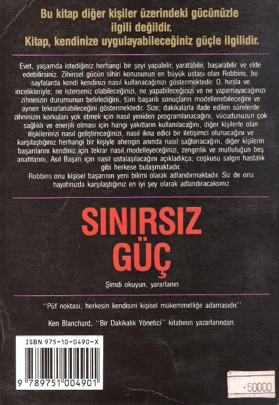

nin artacağını söyledim. Gereksinimlerinden doğan bu işleri yapması gerektiğini belirttim. Anlaşmamıza bir kez uymazsa; bunu bir öğrenme deneyimi, iki kez uymazsa bir uyarı olarak kabul etmesini, üçüncü kez uymazsa evden gitmek zorunda kalabileceğini söyledim.
Benim yaptığım; yalnızca, onu değer verdiği konulara doğru yönelterek, yaşaından aldığı tadı korumak ve artırmaktı. Geçmişte ailesiyle olan ilişkisini destekleyecek yönde davranmıyordu. Bu değişikliklerin ihtiyaçlarından doğduğunu ve kendini kanıtlamak için iyi bir yöntem olduğunu bilmiyordu. En son olarak ondan haber aldığıöda, hâlâ örnek bir çocuk gibi davrandığını öğrendim. Değerleri metaprogramlarıyla birlikte onun temel güdüleme araçlarını oluşturuyordu. Ona kendisi için gerekli emniyet, güven ve mutluluğu sağlayacak yolları göstermiştim.
"Diğerlerini bilenler akıllıdır, ama kendini bilenler daha akıllıdır.
Diğerlerini kontrol edenler kuvvetli olabilirler, ama kendini kontrol edebilenler, çok daha güçlüdürler."
— Lao Tsu, Tao Teb King
Tahmin ediyorum, değerlerin değişim için ne kadar etkili ve geçerli araçlar olduğu anlaşılmıştır. Eskiden değerleriniz hemen hemen bütünüyle bilinçaltı düzeyinde çalışıyordu. Ama şimdi, olumlu yönde bir değişiklik için, değerlerinizi hem anlama hem de değerlendirme yeteneğine sahipsiniz. Geçmişte de atomun ne olduğunu bilmediğimiz için, o büyük gücü kullanamıyorduk.
Değerler hakkında bilgilenmek de, buna çok benzer bir etki yapar. Onları bilinç düzeyine getirmekle, önceden elde edemediğimiz sonuçları şimdi elde edebiliriz. Önceden varlığını bile bilmediğimiz bu düğmelerle, artık oynayabiliriz.
Unutmayın ki, değerler genel etkileri olan inanç sistemleridir. Bu ne 372
denle değerlerimizde (ister ikilemleri yok ederek, isterse zayıf değerleri güçlendirerek) değişiklik yaparak, tüm hayatımızı değiştirebiliriz.
Eskiden olduğu gibi değerlerden doğan ikilemlerimizi anlayamamak yerine; içimizde nelerin döndüğünü, diğerleriyle aramızda ne olduğunu anlayarak, yeni sonuçlar üretebiliriz. Bunu birçok şekilde yaparız. Bu kitabın tümünde yapmaya çalıştığımız gibi, altbiçemler aracılığıyla kanıtlama yöntemlerini değiştirebiliriz.
Değerler arasında bir ikilem doğduğunda, aslında bu kendini kanıtlama yöntemleri arasında olmuş demektir. İstersek görüntüyü silikleştirerek ya da sesini kısarak bu ikilemi dikkati çekmeyecek bir şekle sokabiliriz. Hatta bazı durumlarda değerin kendisini bile değiştirebiliriz. Daha üst düzeyde olmasını istediğimiz bir alt düzey değerimiz varsa; altbiçemlerini değiştirerek onu üst düzey değeri yapabiliriz. Birçok durumda altbiçemlerle uğraşmak hem daha kolay, hem de daha etkilidir. Sanırım bu tekniklerin ne kadar güçlü olduklarını siz de biliyorsunuz. Bu yolla, değerlerinizin önem derecesini; onların beyninizdeki temsillerini değiştirerek, değiştirebilirsiniz.
En yüksek değeri faydalılık olan birine danışmanlık yapıyordum. Sevgi, onun sıralamasında 9. sıradaydı. Tahmin edebileceğiniz gibi bu tip bir değer sıralamasına sahip birinin, diğer insanlarla çok iyi bir ilişki kurması beklenemez.
O, en yüksek değeri olan faydalılığı; renkli, uygun tonlarda ve büyük bir görüntü olarak sağa yerleştiriyordu. Oysa sevgiyi siyah-beyaz, koyu tonda, küçücük bir ekranda görüyordu. Bunu öğrendikten sonra tek yapacağımız şey, sıralamada alt düzeyde yer alan değerlerin altbiçemlerini de, üst düzey değerlerin altbiçemleri haline getirmek olacaktır. Böylece onun değerleri hakkındaki fikirleri ve değer sıralaması değişecek ve sevgi en üst düzeye sahip bir değer olacaktır. Bu düzeyde korunması için de swish paterni uygulanacaktır. Bu işlemleri öğreterek, dünyaya ve hayata bakış açısını değiştirdim. Böylece eylemleri uygun bir temele dayanmaya başladı.
373
Bir insanın değer sıralamasını değiştirmenin, hemen ortaya çıkmasa bile, çok büyük imaları olabilir. En iyisi, önce kişinin kendini kanıtlama yordamını keşfetmek ve değer sıralamasını değiştirmeden önce, algılamasını değiştirmektir.
Sanırım bunun kişisel bir ilişkide ne kadar önemli olduğu anlaşılmıştır. Bir insanın en önemli değeri çekicilik, ikincisi dürüst iletişim, üçüncüsü yaratıcılık ve dördüncüsü de saygı olsun. Bu ilişkide, doyurucu sonuç elde etmenin iki ayrı yolu vardır. Bir tanesi saygıyı birinci değer, çekiciliği de sonuncu değer yapmaktır. Böylece artık eşine çekici gelmeyen birine; onun eşine karşı duyduğu saygının çekicilikten daha üstün olduğu hissini verebiliriz. Bu şekilde o, eşine saygı duyduğu sürece; en önemli ihtiyacının karşılandığını hissedecektir. Daha basit bir yol ise, kişinin çekiciliğini anlamada kullandığı kanıtlama yordamını belirlemektir. Karşısındaki kişide neler bulması, görmesi, hissetmesi gerekir?
Sonra, ya onun çekicilik stratejisini değiştirir ya da tatmin edilmesi gereken değerleri eşiyle paylaşmasını sağlarız.
Birçoğumuz çatışan değerlere sahibizdir. Hem başarılı olmak, hem de plajda yan gelip yatmak isteriz, hem zamanımızı ailemizle geçirmek, hem de işimizde çok çalışıp başarılı olmak isteriz. Hem güvenlik hem de macera ararız. Bu değer ikilemleri kaçınılmazdır. Bunlar hayatımıza biraz da çeşni katarlar. Asıl sorun, temel değerlerimiz bizi farklı yönlere çektiğinde çıkar. Bu bölümü bitirdikten sonra değer sıralamanızı ve kendinizi kanıtlama yordamlarınızı inceleyin ve çatışan yönleri bulun. Onları açıkça görebilmek, çözümün birinci basamağıdır.
Kişilerde olduğu kadar toplumlarda da değerler, çok önemli bir yere sahiptir.
Birleşik Devletlerin son yirmi yıllık tarihi değerlerin değişebilirliği ve önem sıralaması için iyi bir örnek oluşturur. Altmışlarda ortaya çıkan değer çatışmaları hangi devrimi yaptı? Bir anda toplumun ses çıkaran önemli bir bölümü, toplumun bir bütün olarak sahip olduğu değerleri açıkça tartışmaya başladılar.
Ülkenin paylaşılan en temel değerleri
374
(vatanseverlik, aile, evlilik) tartışılmaya başlandı. Sonuçta büyük bir karmaşa ve sosyal benzeşimsizlik dönemi yaşandı.
O günlerle bugünler arasında iki büyük fark var. Birincisi 80'li yılların çocukları, değerlerini ifade etmek için yeni ve daha olumlu yollar buldular. 60'lı yıllarda özgürlük, uyuşturucu kullanmak ve saç uzatmaktı. Ama şimdi, yani 80'lerde, kendi işine sahip olmak ve yaşamını denetleyebilmek, aynı sonucu elde etmenin en etkin yolu olarak görülüyor. Diğer farklılık ise, değerlerin değişmesidir.
Amerikan değerlerinin son yirmi beş yılını incelersek; hiçbir değer setinin, diğerinden daha başarılı olduğunu söyleyemeyiz. Bunun yerine devamlı değişen değerler göze çarpar. Kimi yerlerde eski değerlere bağlı kalınmış (vatanseverlik, aile yaşantısı gibi), kimilerinde ise 60'lı yılların değerlerinin yeni uyarlamaları kullanılmıştır. Biz daha toleranslıyız. Kadın hakları için, azınlıklar için, tatminkar çalışma koşullan için hep farklı değerlere sahibiz.
Burada hepimiz için çok faydalı bir ders vardır. O da değerlerin ve insanların değişebileceğidir. Ancak nefes almayan insanlar değişmezler. Önemli olan bu durumu anlamak ve ona ayak uydurmaktır. Tek bir isteğe bağlı kalıp onu elde ettiklerinde; artık mevcut değerlerinin uygun olmadığını anlayan insanlar örneğini hatırlayın. Birçoklarımız, birçok kez bu durumla karşılaşır. Bunu engellemenin yolu, değerlerimizi ve bunlardan doğan kendimizi kanıtlama yordamlarımızı iyice kavramaktır.
Hepimiz bir miktar benzeşimsizlik içinde yaşarız. Bu, insan olmanın belirsizliğinin bir parçasıdır. Aynen 60'larda toplumların değişmesi gibi, insanlar da değişir. Ama değişmenin ne olduğunu bilirsek, daha kolay ayak uydurur ve elimizden gelen değişiklikleri ortaya koyarız. Benzeşimsizlik hisseder ve olanları anlayamazsak; uygun olmayan davranışlar içine gireriz. İçkiye, sigaraya alışır ya da farkında olmadan hayal kırıklıkları üretmeye başlarız. Bu nedenle ikilemleri çözümlemenin ilk adımı, onları anlamaktır. Asıl başarı formülü burada da, diğer alanlarda olduğu gibi geçerliliğini korur. Ne istediğinizi, temel 375
değerlerinizi ve değerler hiyerarşinizi bilmelisiniz. Eyleme geçmek zorundasınız.
Ne elde ettiğinizi anlamak için duyusal keskinliğinizi artırmalı ve değişim için gerekli esnekliği göstermelisiniz. Şimdiki davranışlarınız değerlerinizle uyuşmuyorsa, ikilemi çözümlemek için onlarda birtakım düzeltmeler yapmanız gerekir.
İncelemeye değer bir nokta daha var. Her an hepimizin modelleme yaptığını hatırlayın. Çocuklarımız, çalışanlarımız, iş çevremiz değişik şekillerde sürekli olarak bizi modellemektedir. Etkili model olmada, güçlü değerlere ve benzeşimli davranışlara sahip olmaktan daha önemli bir şey yoktur. Modelleme önemlidir, ama değerler daha da önemlidir. Sözünüze çok bağlıysanız ve hayatınız mutsuz ve çelişkili görünüyorsa; sizi modelleyenler, mutsuzluk ve çelişki ile sözüne bağlılığı bağdaştıracaklardır. Sözünüze bağlıysanız ve hayatınız mutlu ve eğlenceli ise; sözüne bağlılık, mutluluk ve eğlenceyi bağdaştıran benzeşimli bir modelsiniz demektir.
Hayatınız boyunca sizi en çok etkileyen insanları düşünün. Şansınız onların en etkili, en uyumlu modeller olmasıydı. Onlar, değerleri ve hareketleriyle başarının en canlı, en göze batan başarılı modelleridir. Tarihteki en önemli modelleme güçleri, değerler üzerinde çok duran kutsal kitaplardır. Anlattıkları hikayeler, tanımladıkları durumlar; bu değerlere önem veren insanların hayatlarını zenginleştirecek modellerdir.
Bir kişinin değerlerini keşfetmek; basit olarak onun için neyin en önemli olduğunu, neyin önemli olmadığını anlamaktır. Bunu bilmekle yalnız karşınızdakinin değil, kendi ihtiyaçlarınızın da farkına varırsınız. Bir sonraki bölümde, kitapta incelediğimiz konuları uygulayabilmek için kullanmamız gereken beş kavram üzerinde duracağız. Ben bunlara "Zenginliğin ve Mutluluğun Beş Anahtarı" adını verdim.
376
BÖLÜM: 19
Zenginlik ve Mutluluğun
Beş Anahtarı
"İnsan çevrenin değil, çevre insanın yaratışıdır."
— Benjamin Disraeli
ARTIK yaşamınızın mutlak sorumluluğunu yüklenebilmek için gerekli kaynaklara sahipsiniz. İç temsilinizi şekillendirme, başarı ve gücü sağlayacak durumları elde etme yeteneğine sahipsiniz. Fakat yeteneğe sahip olmakla, yeteneği kullanmak her zaman aynı anlama gelmez. Kişileri belirli zamanlarda tekrar beceriksiz duruma sokan kesin deneyimler vardır. Yollardaki virajlar, nehirlerdeki girdaplar, zaman zaman bizi tekrar tuzağa düşürür. Kişilerin tüm yapabileceklerine tutarlı bir şekilde engel olan deneyimler vardır. Bu bölümde size; tehlikelerin nerede olduğunu gösterecek bir harita ve tehlikeden kur-tulmak için gerekli olan bilgiyi vermek istiyorum.
377
Ben bunlara zenginlik ve mutluluğun beş anahtarı adını verdim. Şimdi sahip olduğunuz tüm yetenekleri kullanmak ve olabileceklerinizin hepsini olmak istiyorsanız; bu anahtarları anlamak zorundasınız. Kararlıysanız ve anahtarlan uyumlu bir şekilde kullanabilirseniz, yaşamınız sürekli başarılarla dolu olacaktır.
Kısa bir süre önce Boston'daydım. Bir akşam seminerinden sonra, gece yansı Copley Meydanı'nda dolaşıyordum. Eski Amerikan evlerinden gökdelenlere kadar çeşitli yapılardaki binaları incelerken, bir adamın yalpalayarak bana doğru geldiğini fark ettim. Haftalardır sokakta uyumuş gibi görünüyordu. Sanki aylardır tıraş olmamıştı ve etrafa alkol kokuları yayıyordu.
Adamın benden para isteyeceğini anladım. Haklı olarak, "Öyle düşündüğünüz için adamı kendinize doğru çektiniz", diyeceksiniz. Her neyse adam yaklaştı ve
"Bayım, bir çeyrek dolar borç verir misin?" dedi. Önce adamın davranışını ödüllendirmeyi isteyip istemediğimi düşündüm. Sonra onu üzmemeye karar verdim. Benim için bir çeyrek dolar eksik ya da fazla olmuş fark etmezdi.
Sonunda ona bir ders verme girişiminde bulunmaya karar verdim. "Bir çeyrek mi?", "Yani bütün istediğin sadece bir çeyrek dolar mı?" dedim. "Evet, sadece bir çeyrek" diye cevap verdi. Ben de cebimden bir çeyrek dolar çıkardım ve
"Hayat sana istediğin her miktardaki parayı verecektir" dedim. Şaşırmış bir ifadeyle suratıma baktı ve sonra uzaklaştı.
Adamın uzaklaşışını izlerken, başarılı olanlarla başarısızlar arasındaki farkları düşünmeye başladım. Onunla benim aramda ne gibi farklar vardı? Niçin benim yaşamım neşe dolu ve istediğimi istediğim zaman yapabiliyorum, istediğim yere istediğim zaman gidebiliyorum, istediğim kişiyle istediğim kadar beraber olabiliyorum? O, belki altmış yaşında ve sokaklarda çeyrek dolar dilenerek yaşıyor. Tanrı bana "Robbins, sen çok iyisin. Öyleyse hayal ettiğin yaşamı yaşayacaksın" mı dedi? Sanmıyorum. Birileri bana çok büyük kaynaklar ya da üstünlükler mi hediye etti? Sanmıyorum. Bir zamanlar ben de aşağı yukarı 378
onunki kadar kötü durumdaydım; ama, ben onun kadar çok içmedim ve sokaklarda uyumadım.
Sanırım farkın bir kısmı bu adama verdiğim cevapta var. Yani ne isterseniz, yaşam size verecektir. Bir çeyrek dolar isterseniz, yaşam size o kadarını verecektir. Yaşam sevinci ve başarı isterseniz, yaşam size onu verecektir.
Şimdiye kadar yaptığım çalışmalar bana; durum ve davranışlarımızı değiştirebilirsek, her şeyi değiştirebileceğimizi öğretti. Yaşamdan ne isteyebileceğinizi ve onu elde ettiğinizden nasıl emin olabileceğinizi öğrenebilirsiniz. Daha sonraki aylarda sokakta rastladığım insanlara hep yaşamlarını ve bu duruma nasıl ulaştıklarını sordum. Yaşamda benzer güçlüklerle uğraşmak zorunda olduğumuzu farketmeye başladım. Fark onlarla başa çıkma yordamlarındaydı.
"Kullandığınız kelimeler, nasıl yaşayacağınızı belirlerler.
— Yunan Atasözü
Başarıya giden yolda trafik işareti olarak kullanılabilecek beş ilkeyi sizinle paylaşmak istiyorum. Bunlar sihirli ya da çok karmaşık ilkeler değildir, fakat bu ilkelere mutlaka uyulması gerekir. Onların kullanımında ustalaşırsanız, yapabileceğiniz işler üzerindeki sınır kalkacaktır. Onları kullanmazsanız, atlayabileceğiniz yüksekliğe çoktan sınır koymuşsunuz demektir. Olumlu olmak ve pozitif düşünmek başlangıçtır; fakat cevabın tümü değildir. Disiplinsiz olumluluk, sulanmanın başlangıcıdır. Disiplinli olumluluk ise harikalar yaratır.
Zenginlik ve mutluluğu sağlamanın anahtarları aşağıda açıklanmıştır.
ENGELLERLE NASIL BAŞA ÇIKILACAĞINI ÖĞRENMELİSİNİZ.
Olabileceklerinizin hepsini olmak, yapabileceklerinizin hepsini yapmak, işitebileceklerinizin hepsini işitmek, görebileceklerinizin hepsini görmek istiyorsanız engellerle nasıl başa çıkılması gerektiğini öğrenmek zorundasınız.
Engeller her an ha
379
yallerinizi yıkabilir. Engeller pozitif tutumları negatife, güçlü durumları aciz duruma sokabilir. Negatif tutumun yaptığı en kötü şey, kişisel disiplini yok etmesidir. Kişisel disiplin kaybolduğunda, istediğiniz sonuçlar da kaybolur.
Bu nedenle uzun dönemli başarıyı garantilemek için engellerinizi nasıl disipline edeceğinizi öğrenmelisiniz. İzninizle size bazı şeyler anlatmak istiyorum.
Başarının anahtarı yoğun engellemedir. Büyük başarıları incelerseniz, hemen hemen hepsinin başarıya giden yolda yoğun engellemelerle karşılaştığını göreceksiniz. Size bunun tersini her kim söylerse, bilin ki o, başarmanın ne demek olduğunu bilmiyordur. İki tür insan vardır. Engellemelerle başa çıkanlar ve engellemelerle başa çıkmak isteyenler.
Federal Express adında küçük bir taşıma şirketi vardı. Şirketin kurucusu Fred Smith sayılamayacak kadar engellemeyle karşılaşmasına rağmen, şirketini milyarlarca dolarlık bir şirket haline getirmeyi başardı. Sahip olduğu tüm parasıyla şirketi kurduğu zaman yaklaşık olarak sadece 150 paket taşımayı planlıyordu. 0, onaltı paket taşıdığında aynı sektördeki diğer şirketlerden beşi birer işçisini işten çıkardı. Bu andan itibaren işler kötü gitmeye başladı. İşçiler çeklerini kendilerine en uygun gelen ilk yerde hemen bozdurmaya çalışıyorlardı; çünkü çekleri karşılayacak kadar nakit para yoktu. Birçok kez planları bozulma sürecine girdi ve bazen işini sürdürebilmesi için mutlaka belirli bir miktarda satış
yapmak zorunda kalıyordu. Bu şirket şimdi milyarlarca Dolarlık cirosu olan bir şirkettir. Bunun bir tek nedeni vardır, o da Fred Smith'in engelleme üstüne engellemeyle başa çıkma yeteneğine sahip olmasıdır.
Engellemelerle başa çıkabilen insanlar ödüllendirilirler. Eğer iflas etmişseniz, muhtemelen bunun nedeni çok fazla engellemeyle başa çıkamamanız yüzündendir. "İflas ettim, çünkü çok fazla engellemeyle karşılaştım" derseniz geri adım attınız demektir. Daha çok engellemeyle başa çıksaydınız, zengin olurdunuz. Parasal açıdan iyi durumda olanlarla olmayanlar arasında-380
ki en önemli fark, engellemelerle başa çıkma yöntemlerinden kaynaklanır.
Fakirlerin çok fazla engellemeye sahip olmadıklarını söyleyecek kadar katı yürekli değilim. Sadece zengin olmanın yolunun başarıya ulaşıncaya kadar engellemelerin üstüne gitmekten geçtiğini anlatmaya çalışıyorum. Genellikle insanlar zenginlerin problemlerinin olmadığını sanırlar. Biraz daha dikkat etseler, zenginlerin daha çok problemlerinin olduğunu görecekler. Onlar sadece yeni stratejiler ve alternatifler yaratarak, bu problemlerle nasıl başa çıkılabileceğini biliyorlar. Zengin olmak sadece çok paraya sahip olmak demek değildir. Zengin bir ilişki daha çok problem ve daha çok zorluk demektir.
Herhangi bir problemle karşılaşmak istemiyorsanız, böyle bir ilişkiye girmeyiniz.
İşte, ilişkide, yaşamda, büyük başarıya giden her yolda çok fazla engelleme vardır.
En Uygun Performans Teknikleri'nin bize en büyük hediyesi, etkin bir şekilde engellemeyle nasıl başa çıkılacağını öğretmesidir. Sizi engelleyen herhangi bir şeyi ele alınız ve bununla ilgili olarak sizi heyecanlandıracak bir program yapınız.
SDP gibi araçlar sadece olumlu düşünme değildir. Olumlu düşünmedeki sorun, o ana kadar üzerinde düşünülen konuda eyleme geçmek için genellikle geç kalınmasıdır.
SDP size, gerilimleri fırsata dönüştürecek bir yol sunmaktadır. Sizi çöküntüye uğratan herhangi bir imajın nasıl silineceğini ya da nasıl çoşku sağlayacak bir imaja dönüştürüleceğini öğrenmiş bulunuyorsunuz. Bunu yapmak zor bir iş
değildir. Nasıl yapılacağını zaten öğrenmiş durumdasınız.
Gerilimle başa çıkmanın iki yolu vardır: Birincisi küçük şeylere iltifat etmemektir. İkincisi ise her şey küçüktür.
Tüm başarılı insanlar, başarının engellemenin öbür tarafında filiz verdiğini bilirler. Maalesef, bazı insanlar öbür tarafa geçmezler. Amaçlarını gerçekleştiremeyenler, engellemeler karşısında yılanlardır. Onlar istediklerine ulaşabilmeleri için atmaları gereken adımlara, engellemelerin engel olmasına izin verirler. Bu yolda engellemeleri yararak ilerleyeceksiniz. Her geri 381
adım bir başarısızlık değil, sizi amacınıza götürecek yolda daha fazla bilgi veren bir geri beslemedir. Böylece daha ileriye gitmek için gerekli bilgileri sağlamış
olacaksınız. Bu deneyimi yaşamamış başarılı bir insan bulabileceğinizden şüpheliyim.
REDDEDİLMEYLE NASIL BAŞA ÇIKILACAĞINI ÖĞRENMELİSİNİZ.
Bu ilke ikinci anahtarımızdır. Seminerlerimde bu anahtarı söylediğimde, odadaki fizyolojinin değiştiğini hissedebiliyorum. Dilde insanı "hayır" kelimesinden daha çok inciten başka bir kelime var mıdır? Bir satış elemanıysanız; 100 bin dolarlık satış yapmakla, 25 bin dolarlık satış yapmak arasındaki fark nedir? Aradaki temel fark, sizi eyleme geçmekten alıkoyan korkuyu yenmek için reddedilmeyle nasıl başa çıkılacağını öğrenmektir. En iyi satıcılar, en çok reddedilenlerdir.
Onlar hayır kelimesini , evet kelimesini duyabilmek için bir dürtü olarak kullanırlar.
Bizim kültürümüzde insanların karşılaştığı en büyük zorluk, hayır kelimesiyle nasıl başa çıkılacağını bilmemektir. Daha önce sorduğum soruyu hatırlayın.
Başarısızlığa uğramayacağınızı bilseydiniz ne yapardınız? Bu soruyu şimdi düşünün. Başarısız olmayacağınızı bilmek, sizin davranışlarınızı değiştirmeyecek midir? Bu da sizin istediğiniz şekilde davranmanıza neden olmaz mı? Öyleyse sizi bundan alıkoyan nedir? Hayır kelimesidir. Başarılı olmak için reddedilmenin üstesinden nasıl gelineceğini bilmek zorundasınız. Reddedilmeyi bütünüyle yok etmenin yollarını öğrenin.
Bir zamanlar bir yüksek atlayıcıyla birlikte çalışmıştım. Olimpiyatlarda yanşan bir atlet olmasına rağmen, artık en iyi derecesinin üzerine çıkamayacağına inanıyordu. Onu atlayış yaparken seyrettiğimde, bu sorununu hemen kavradım.
Çıtayı düşürdüğü zaman, bütün duygularının alt üst olduğundan emindim.
Çıtanın her düşüşü, durumu biraz daha kötüleştiriyordu. Hemen yanıma çağırdım ve benimle çalışmak istiyorsa, aynı şeyi bir daha asla tekrar etmemesini söyledim. Her şeyi bir
382
başarısızlık olarak görüyordu. Atlayış yapmadan önce beynine ne kadar başarısızlık mesajı varsa gönderiyordu. Her atlayışında, kendisine başarı getirecek becerikli durumun yerine başarısızlıkla daha çok ilgileniyordu.
Ona çıtayı tekrar düşürürse, kendi kendisine şaşırmasını söyledim. Ahlayıp puhlamak bir diğer başarısızlığı getirecektir. O kendisini tekrar becerikli duruma sokmalı ve ikinci denemesini bu durumdayken yapmalıdır. İlk üç atlayışındaki derecesi son iki yılda yaptığı derecelerden daha iyi olmuştu. O da çok büyük bir değişiklik değildi. Elde ettiği dereceler arasındaki fark sadece yüzde %10 idi.
Farklılık yükseklikte değil, performansta idi. Bu şekildeki küçük değişiklikler, yaşamınızın kalitesini büyük oranda artırabilir.
Rambo ismini hiç duydunuz mu? Sylvester Stallone? Artistlik bürosuna başvurduğunda "Hey! Sen bizim tam aradığımız insansın. Hemen gel, sana bir filmde rol verelim" mi dediler sanıyorsunuz. Hayır, Sylvester Stallone başarıya ulaşıncaya kadar red üstüne red cevaplarına dayanma gücü gösterdi. O işe başladığında binden fazla red cevabıyla karşılaştı. O New York'ta bulabildiği tüm artistlik bürolarına başvurdu ve hepsinden hayır cevabı aldı. Fakat o; zorlamaya, denemeye devam etti ve sonunda "Rocky" filmini yaptı. O, bin kez hayır cevabı almasına rağmen, binbirinci kapıyı çalma cesaretini göstermişti.
Siz ne kadar hayır cevabına dayanabilirsiniz? Size çekici gelen birisiyle kaç kez konuşmak istediniz ve sonra hayır kelimesini duymaktan korktuğunuz için vazgeçtiniz. Kaçınız, reddedilme korkusuyla yapmak istediğiniz şeyleri yapmaktan vazgeçtiniz? Bunun ne kadar büyük bir delilik olduğunu düşününüz.
Hayır kelimesi yüzünden kendinizi nasıl sınırladığınızı düşünün. Kelimenin kendisinin herhangi bir gücü yoktur. Derinizi yüzemez, gücünüzü elinizden alamaz. Onun gücü, sizin onu temsil ediş şeklinizden, yarattığınız sınırlamalardan gelmektedir. Sınırlı düşünceler de sınırlı yaşamları yaratır.
Bu nedenle beyninizi kullanmayı öğrendiğinizde, reddedil
383
meyle nasıl başa çıkılabileceğini de öğrenebilirsiniz. Hatta, hayır kelimesini kendiniz için bir güven kaynağı şekline dönüştürebilirsiniz. Her reddedilmeyi yararlanılması gereken bir fırsata dönüştürebilirsiniz. Telefonla satış
yapıyorsanız; telefona uzanmak, reddedilme korkusu yerine sizde bir çoşku yaratmalıdır. Başarının, engellemenin öbür tarafında yattığını hatırlayınız.
Engellemeyle karşılaşmayan gerçek bir başarı yoktur. Ne kadar çok reddedilirseniz; o kadar çok iyi, o kadar bilgili ve istediğiniz sonuca o kadar çok yakın olursunuz. Bundan sonra sizi reddeden kişiyi kucaklamalısınız. Bu onun fizyolojisini değiştirecektir. Hayırları kucaklamaya dönüştürün. Reddedilmeyle başa çıkmayı öğrenirseniz; istediğiniz her şeyi öğrenebilirsiniz.
PARASIZLIĞIN BASKISIYLA BAŞA ÇIKMAYI ÖĞRENMELİSİNİZ.
İşte mutluluk ve zenginliğin üçüncü ilkesi. Mecburi yön, sadece finansal (parasal) baskı değildir, hiç paraya sahip olmamaktır. Birçok kimseyi tahrip eden çok çeşitli finansal baskılar vardır. Onlar aç gözlülük, haset, hile ve paranoya yaratabilir. Onlar, duyarlılığınızı ve arkadaşlarınızı çalabilir. Dikkat edin, yapabilirler diyorum, yaparlar demiyorum. Finansal baskıyla başa çıkmak demek; nasıl kazanılacağını, nasıl verileceğini ve nasıl tasarruf edileceğini bilmek demektir.
Para kazanmaya başladığımda azar işitmeye başladım. Arkadaşlarım beni yadırgadılar. "Paranın içinde boğuluyorsun. Senin problemin nedir?" diye sormaya başladılar. Ben de "Para içinde boğulmuyorum, sadece biraz param var" şeklinde cevaplar vermeye başladım. Onlar olaya benim gibi bakmıyorlardı.
Şu ya da bu şekilde farklı bir finansal duruma sahip olduğum için, beni farklı bir insan olarak algılamaya başladılar. Bazıları bana çok darıldı. Yeterli paraya sahip olmamak, finansal baskının bir başka türüdür. Muhtemelen bu baskıyı çoğu insan gibi siz de her gün hissediyorsunuz. Paranızın çok ya da az olması sonucu değiştirmez. Mutlaka finansal baskıyla uğraşmak zorundasınız.
384
Felsefelerimizin;
yaşamımızdaki
tüm
eylemleri
yönlendirdiğini,
nasıl
davranacağımıza ilişkin iç temsillerimize rehberlik ettiğini unutmayın. Onlar bize nasıl davranacağımızı gösteren modellerdir. George S. Clayson, "Babiî'in En Zengin Adamı" isimli kitabında bize finansal baskıyla nasıl başa çıkılacağına ilişkin muhteşem bir model sunmaktadır. Bu kitabı daha önce okumuş
muydunuz? Okumuşsanız, tekrar okuyun. Okumadıysanız, hemen şimdi satın alın ve okumaya başlayın. Bu kitap sizi bütünüyle zengin, mutlu ve heyecanlı yapacaktır. Benim bu kitaptan öğrendiğim en önemli şey, tüm kazancımızın
%10'unu vermek gerektiğidir. Doğru fakat niçin? Bir nedeni, aldığınızı geri vermektir. Diğer nedeni de kendiniz ve diğerleri için bir değer yaratmaktır. En önemlisi dünyaya ve bilinçaltınıza, gerekenden fazlasına sahip olduğunuzu söylemektir. O eğitim için çok güçlü bir inançtır. Yeterinden fazlasına sahipsiniz demek, hem siz hem de diğerleri istediklerine sahip olabilirler demektir. Bu düşünceye sahip olursanız, onu gerçekleştirebilirsiniz.
Ne zaman %10'u vermeye başlayacaksınız? Zengin ve ünlü olduğunuzda mı?
Hayır. Bir işe başladığınız zaman vermeye başlamalısınız. Çünkü verdiğiniz sizin tohumunuzdur. Onu yememelisiniz, onunla yatırım yapmalısınız ve en iyi yatırım şekli de başkaları için değer yaratması amacıyla vermektir. Bunun bir yolunu bulmakta güçlük çekmeyeceksiniz. Gerekenler çevrenizde vardır. Böyle yapmanın en değerli yönlerinden birisi de bu eylemin kendinize ilişkin hislerinizi değiştirmesidir. İhtiyacı olanları bulmak ve onların ihtiyaçlarını karşılamak kim olduğunuza ilişkin hislerinizi değiştirecektir. Bu tür hisler ya da durumlar, sizin daha saygın bir tutumla yaşamanızı sağlayacaktır.
Önceki gün Kalifoniya'ya, mezun olduğum yüksek okula gitme şansım oldu.
Benim öğretmenler için düzenlediğim bir program var ve bu program hakkında yaşamımı etkileyen öğretmenlerime bilgi vermek istedim. Okula gittiğimde kendimi nasıl ifade edeceğimi bana öğreten konuşma programının, finansal kaynak yetersizliği ve yöneticilerin yeteri kadar önem
Sınırsız Güç - 25-
385
vermemeleri yüzünden kaldırıldığını öğrendim. Vakit geçirmeksizin programın tekrar başlaması için finansal kaynağı ben sağladım. Böylece bana daha önce verilenlerin bir kısmını geri vermiş oldum. Bunu zengin bir vatandaş olduğum için yapmadım. Borçlu olduğum için yaptım. Bir şeyler borçlu olduğunuzu bildiğinizde, onu geri ödeyebilmek güzel bir şey değil midir? İşte paraya sahip olmanın gerçek nedeni budur. Hepimizin pozitif borçları vardır. Paraya sahip olmanın en iyi nedeni; bu borçlan ödeyebilmektir.
Çocukluğumda ailem bize bakabilmek için çok çalışıyordu. Birçok nedenlerden ötürü parasal yönden çok kötü bir durumdaydık. Parasız kaldığımız bir Şükran Günü'nü hatırlıyorum. Birisi bizim kapının önüne hindi ve birçok yiyecekle birlikte gelinceye kadar her şey çok kötü görünüyordu. Yiyecekleri getiren adam," Bunlan sizin bir şey istemeyeceğinizi bilen, sizi seven ve sizin çok iyi bir Şükran Günü geçirmenizi isteyen biri gönderdi" dedi. O günü hiç unutmam. Bu nedenle her Şükran Günü o adamın bize yaptığını yaparım. Bir haftalık ihtiyacı karşılayacak kadar yiyecek alır ve gerçekten ihtiyacı olan bir aileye götürürüm.
Yiyecekleri bir işçi ya da görevli olarak götürürüm. Kesinlikle bu hediyeyi benim aldığımı söylemem. Sadece şöyle bir not bırakırım: "Bu, sizinle ilgilenen birisinden gelmektedir. Umarım bir gün sizin de durumunuz yeteri kadar iyi olur ve siz de gerçekten ihtiyacı olanlara yardım edersiniz."
Şükran Günü artık benim için yılın en aydınlık günlerinden birisi olmuştu.
Kendileriyle ilgilenen birisi olduğunu öğrenen insanların yüzündeki değişmeleri görmek, yani bir fark yaratmak, hayatın kendisidir. Bir yıl Harlem'de hindi dağıtmak istedim; fakat hiçbir aracımız yoktu ve her yer de kapalı idi. Arkadaşlarım "Bu yıl bu işi unutalım" dediler. Ben "Hayır. Bu işi yapmaya kararlıyım"
dedim. Hiçbir araca sahip olmadan bu işi nasıl yapacağımı sordular. Ben de,"
Caddelerde çok sayıda araç var. Bizim işimizi görecek bir araç mutlaka bulunur"
cevabını verdim. Size New York'da yapmanızı öneremeyeceğim bir yön 386
temle, bayrak sallayarak araçlara durmaları için işaret etmeye başladım.
Sürücülerin çoğunluğu, Şükran Günü olmasına rağmen, bizim kötü niyetli olduğumuzu sandılar.
Bu nedenle trafik ışıklarına gittim ve araçların camlarına vurarak bizi Harlem'e götürürlerse 100 dolar vereceğimi söylemeye başladım. Bu da bir işe yaramadı ve bu nedenle mesajımda küçük bir değişiklik yaptım. Bir saatlik bir yiyecek yükleme ve taşıma işine ilave, yarım saatlik bir sürede, fakir bir mahallede dağıtım yapmak istediğimizi söylemeye başladım. Bu mesaj, bizi amacımıza biraz daha yaklaştırdı.
Bizim ihtiyacımızı görecek kadar büyük ve güzel bir araçla dağıtımı yapmaya karar vermiştim. Şarap taşıyan çok güzel bir araç geldi ve arkadaşlarım aracı ışıklarda yakaladılar. Cama vurarak bizi istediğimiz yere götürürse 100 dolar vermeyi teklif ettim. Sürücü, "Bana bir şey ödemek zorunda değilsiniz. Sizi gö-
türmekten mutluluk duyarım" dedi. Bu bizim baş vurduğumuz onuncu kişiydi.
Üzerinde Kurtuluş Ordusu (bir tür yardım derneği) yazan şapkasını giydi. İsminin Yüzbaşı John Rondon olduğunu ve bizim gerçekten ihtiyacı olan insanlara yiyecek götüreceğimizden emin olmak istediğini söyledi.
Böylece sadece Harlem'de değil, aynı zamanda ülkenin en bakımsız bölgesi olan South Bronx'de de yiyecek dağıtımı yaptık. Boş bölgeleri geçtik ve harabeye dönmüş evlerin arasından geçerek South Bronx'de alış veriş yapabileceğimiz bir yer bulduk. Aldığımız yiyecekleri; gecekonduda oturanlara, sokakta yaşayanlara, sefil bir hayatı olanlara dağıttık.
Bu kişilerin yaşamlarını hangi oranda değiştirdik bilemiyorum, ama Yüzbaşı Rondon'a göre, onların insanlara ilgi gösterme konusundaki inançları değişti.
Kendinizden verdiğiniz zaman elde ettiklerinizi, parayla satın alamazsınız. Hiçbir planlama % 10 verdiğinizde elde edeceklerinizi size sağlayamaz. O, size paranın ne yapabileceğini ve ne yapamayacağını öğretecektir. Bu ikisi de öğrenebileceğiniz en değerli derslerdendir. Ben bunlardan en iyi şeklin, fakir kimselere yardım etmek olduğu
387
nu düşünüyordum. Sonra bunun tersinin doğru olabileceğini fark ettim. Fakir kişilere yardım etmenin en iyi yolu; diğer olanakların modeli olmak, onların diğer mümkün seçimler kümesini bilmelerini sağlamak ve kendi kendilerine yeterli olacak şekilde kaynaklarını geliştirmelerine yardımcı olmaktır.
Gelirinizin % 10'unu verdikten sonra, diğer % 10'uyla borçlarınızı azaltın ve diğer
%10'uyla sermayenizi artırın. Sahip olduklarınızın % 70'iyle yaşamalısınız. Biz insanların çoğunun kapitalist olmadığı, kapitalist bir toplumda yaşıyoruz. Kısaca, onlar isteklerine uygun bir yaşam tarzına sahip değildir. Atalarımızın yaratmak için çarpıştıkları, etrafı fırsatlarla çevrili bu sistemin üstünlüklerinden yararlanamadıktan sonra, niçin kapitalist bir toplumda yaşıyoruz? Para biriktirmeyi ve onu bir sermaye olarak kullanmayı öğrenin. Kazancınızı harcıyorsanız, asla sermayeniz olmaz; ihtiyacınız olan kaynaklara sahip olamazsınız. Şu anda Kaliforniya'da yıllık ortalama gelirin 25.000 dolar olduğu söylenmektedir. Ortalama tüketim miktarı ise 30.000 dolardır. Aradaki farka finansal baskı denilmektedir. Herhalde bu kalabalığın içinde olmak istemezsiniz.
Para da başka şeyler gibidir. Onu kendi lehinize de kullanabilirsiniz, aleyhinize çalışmasına da izin verebilirsiniz. Zihninizdeki diğer şeylerle nasıl ilgileniyorsanız; parayla da aynı şekilde ilgilenmelisiniz. Bu ilgi, aynı amaçla özenli bir şekilde gösterilmelidir. Kazanmayı, tasarruf etmeyi ve vermeyi öğrenin. Bunu başarabilirseniz, finansal baskılarla nasıl başa çıkılacağını da öğrenmiş
olursunuz. Böylece, size mutsuzluk getirecek olan negatif durum yaratan dürtüler için ortam yaratılmayacaktır. Aynı zamanda benzer faydaları çevrenizdeki kişiler için de yaratmış olursunuz.
Bu üç anahtarı kullanmada ustalaştığınızda; yaşamınızda bir hayli başarılı deneyimler edinmeye başlayacaksınız. Engelleme, reddedilme ve finansal baskıyla başa çıkabilirseniz; yapamayacağınız hiçbir şey yoktur. Tina Turner'ı hiç seyrettiniz mi? O her üç baskının da yoğun olarak etkisinde kalmasına rağmen onlar
388
la başa çıkmasını bildi. Yıldız olduktan sonra evliliğini, parasını kaybetti ve sekiz yıl adi otellerin localarında ve ucuz gece kulüplerinde gösteri yaptı. Plak yapmak için az para önerenleri reddetti. Çalışmayı, hayır demeyi, borcunu ödemeyi, evini geçindirmeyi sürdürdü. Sonuçta yine eğlence dünyasının en üstündeki yerini tekrar aldı.
RAHATLIKLA NASIL BAŞA ÇIKILACAĞINI ÖĞRENMELİSİNİZ.
Dördüncü hedefimiz, anahtarımız budur. Başarının doruğuna çıkan ve sonra birdenbire ortadan kaybolan meşhur insanlar görmüşsünüzdür. Onlar rahatlığa alışmaya başlamışlar ve kendilerini doruğa çıkaran şeyi, ilk planda kaybetmişlerdir.
"Doruğa ulaşsanız bile, hâlâ ulaşılması gereken tüm gelecek önünüzde durmaktadır."
— Lao, Tsu, Tao Teb King
Rahatlık bir vücudun sahip olabileceği en tahrip edici duygudur. Bir kişi çok fazla rahatlığa ulaşınca ne olur? Büyüme, çalışma, katma değer yaratma durur. Çok fazla rahatlık istemeyin. Kendinizi gerçekten rahat hissediyorsanız, büyümeniz duracaktır. Bob Dylan " Meşgul doğmayan, ölümle meşgul olmak için doğmuştur" demiştir. Ya yukarı çıkarsınız, ya da aşağıya inersiniz. Mc Donald's'ın kurucusu olan Ray Kroc, "Uzun süre başarılı olmak için sizden tek bir tavsiye istense, cevabınız ne olurdu?" sorusuna, "Yeşilken büyürsün, olgunlaşınca çürürsün." cevabını vermişti. Yeşil kaldıkça büyüyebilirsiniz. Herhangi bir deneyimi büyümek için bir araç olarak da görebilirsiniz, çürümeye davetiye çıkarmak şeklinde de görebilirsiniz. Emekliliği daha zengin bir yaşamın başlangıcı olarak da, çalışma hayatının sonu olarak da görebilirsiniz. Başarıyı; daha yükseğe ulaşmak için sıçrama tahtası olarak da yan gelip yatılacak yer olarak da görebilirsiniz. Yatılacak yer olarak görürseniz, uzun süre orada kalamazsınız.
389
Rahatlığın bir çeşidi de karşılaştırmadan kaynaklanır. "Tanıdığım kişilere göre başarılı olduğumdan, başarılı olduğumu düşünüyorum" demek, yapabileceğiniz en büyük hatadır. O, sizin arkadaşlarınızın başarısız olduğu anlamına gelebilir.
Kendinizi arkadaşlarınızın ne yaptığına göre değil, amaçlarınızla değerlendirmeyi öğrenin. Niçin? Çünkü, sizi değerlendirecek daima birileri olacaktır.
Bunu çocukken yapmadınız mı? "Johnny böyle yaptı, niçin ben de öyle yapmayayım" demediniz mi? Muhtemelen anneniz de "Güzel, fakat Johnny'nin ne yaptığı beni ilgilendirmez" der ve haklıdır. Siz Johnny, Mary ya da diğerlerinin ne yaptığıyla ilgilenmemelisiniz. Neleri yapmaya muktedir olduğunuzla ilgilenmelisiniz. Ne yarattığınızla ve ne yapmak istediğinizle ilgilenin. Yapmak istediklerinize yardımcı olacak dinamik, katılımcı, yapıcı amaçlarınızla ilgilenin.
Başkalarının ne yaptığıyla değil. Sizden daha fazlasına sahip olan daima birileri olacaktır. Sizden daha azma sahip olan birileri de olacaktır. Bunların hiç biri sorun değildir. Kendinizi, kendi amaçlarınızdan başka bir şeyle yargılamayın.
"Küçük şeyler, küçük zihinleri etkiler."
— Benjamin Disraeli
Şimdi de rahatlıktan kaçınmanın bir başka yolunu anlatmak istiyorum. Kahve seminerlerinden uzak durun. Neden bahsettiğimi biliyorsunuz. Buralarda herkes başkasının çalışma alışkanlıklarından, seks yaşamından, finansal durumundan söz eder ve bunların dışında her şeyin hatasız olduğu kabul edilir. Kahve seminerleri intihar etmeye benzer. Kahve seminerleri dikkatinizi, yaşam deneyiminizi artırmak için neler yapabileceğinizin yerine, başkalarının özel yaşamlarında neler yaptığına çekerek beyninizi zehirlerler. Bu seminerlere tiryaki olmak çok kolaydır. Fakat kendilerini sadece sıkıntıdan kurtarmak isteyen bu
390
insanların, kendi yaşamlarında istediklerini üretme yeteneklerini kaybettiklerini unutmayın.
Hint felsefesinde sık sık kullanılan," Yuvarlanan Fırtına " diye bir deyim vardır ve filozof sadece " İyi niyetle konuşun" der. İleriye sürdüğümüz şeylerin arkamızdan geldiğini unutmayın. Bunun için benim mücadelem, sizi hayatın pisliklerinden uzak tutmaktır. Küçüklerin içinde büyük olmayın. Rahat ve vasat bir insan olmak istiyorsanız, zamanınızı kim kiminle yatıyor dedikodularıyla geçirebilirsiniz. Bir fark yaratmak istiyorsanız; kendinizle mücadele edin, kendinizi sınayın ve size özgü bir yaşam oluşturun.
DAİMA ALMAYI BEKLEDİĞİNİZDEN DAHA FAZLASINI VERİN: Bu prensip, son anahtarımızdır. En önemli anahtar budur. Çünkü bu anahtar, size eninde sonunda gerçek mutluluğu getirecektir.
Bir gece seminerimden arabayla eve dönerken yorgunluktan uyuyor durumdaydım. Arabanın sarsıntısıyla kendime geldim. Yarı uyanık halimle hayata neyin anlam kazandırdığını düşünmeye başladım. Birdenbire, "Yaşamın sırrı vermektedir" şeklinde bir sonuca ulaştım.
Yaşamınızın yolunda gitmesini istiyorsanız; nasıl verileceğini öğrenmekle işe başlamalısınız. Birçok kimse yaşama vermeyi düşünmeden, nasıl alacağını düşünerek başlar. Almak sorun değildir. Almak okyanusa benzer, fakat hareket halindeki süreci başlatabilmek için verdiğinizden emin olmak zorundasınız.
Yaşamdaki problem, insanların önce istemesidir. Bir çift bana geldi ve adam eşinin kendisine iyi bakmadığını ve eşi de kocasının yeteri kadar çekici bulmadığı için, kendisine bakmadığını söyledi. Her ikisi de ilk hareketi diğerinden bekliyordu. İlk hareketi siz yapın.
Bu ne tür bir ilişkidir? Ne kadar sürer? Herhangi bir ilişkideki anahtar, önce vermek zorunda olmanız ve verme işlevini sürdürmenizdir. Duraklamayın ve almayı beklemeyin. Sonucu he
391
saplamaya başlarsanız oyun biter. "Ben ona verdim. Şimdi verme sırası onun"
dediğiniz an oyun bitmiştir. O, gitmiştir. Sonucu dünyaya tekrar geldiğinizde alabilirsiniz; çünkü sonuç levhası artık şimdiki gibi çalışmayacaktır. Siz ağaç dikmeye istekli olmak zorundasınız. Sonuç da onun büyümesidir.
Toprağa gidip "Bana biraz meyve, bir ağaç ver" derseniz; toprak ne der? "Özür dilerim efendim. Siz galiba biraz şaşırmışsınız. Burada yeni olmalısınız. Oyun o şekilde oynanmaz" diye cevap verir. Sonra size tohumun nasıl ekileceğini açıklayacaktır. Ona bakmalısınız. Sulamalı ve toprağı işlemelisiniz. Gübrele melisiniz. Korumalı ve büyütmelisiniz. Tüm bunları yaptıktan bir süre sonra ürünü ya da meyveyi alabilirsiniz. Topraktan sonsuza kadar isteyebilirsiniz; fakat bu olayları değiştiremezsiniz. Meyve için vermek, büyütmek, toprağı işlemek zorundasınız. Yaşam da aynı şekildedir.
Çok para kazanabilirsiniz. Çok büyük bir işletmeyi ya da bölgeyi yönetebilirsiniz.
Sadece kendiniz için çalışıyorsanız, siz gerçekte başarılı değilsinizdir. Gerçekten güçlü değilsinizdir. Gerçek zenginliğe sahip değilsinizdir. Kendinizi başarı dağının en tepesine koyarsanız; muhtemelen oradan düşeceksiniz demektir.
Başarı hakkındaki en büyük yanılgıyı öğrenmek ister misiniz? O tırmanılması gereken bir zirveye, sahip olunması gereken bir şeye ya da ulaşılması gereken durağan bir sonuca benzer. Başarmak ve tüm sonuçlarınıza ulaşmak istiyorsanız; başarıyı bir süreç, bir yaşam biçimi, zihnin bir alışkanlığı, yaşamın bir stratejisi olarak düşünmek zorundasınız. Bu bölüm bunlarla ilgilidir. Nelere sahip olduğunuzu ve yolunuzda hangi tehlikelerin olduğunu bilmelisiniz. Gerçek zenginlik ve mutluluğa erişmek istiyorsanız; gücünüzü, sorumlu ve sevecen bir şekilde kullanma yeteneğiniz olmalıdır. Bu beş nesneyle başa çıkarsanız; harika sonuçlara ulaşabilmek için bu kitapta öğretilen tüm ustalıkları ve güçleri kullanabilirsiniz.
Şimdi de daha büyük düzeyde, yani grup, toplum ya da ulus düzeyinde değişikliğin nasıl çalıştığını inceleyelim.
392
BÖLÜM:20
Eğilim Yaratma:
İnandırmanın Gücü
"Dünya gezegeninin tek bir uzay gemisi ve yazgımızın da ortak olduğunu göremediğimiz sürece, onu daha fazla yürütmemiz mümkün değildir. O, ya herkesin malı olacaktır ya da hiç kimsenin olmayacaktır."
— Buckminster Fuller ŞİMDİYE
kadar
çoğunlukla,
kişilerin
nasıl
büyüyebilecekleri
ve
güçlenebilecekleriyle ilgili değişmelerle ilgilendik. Fakat modern dünyamızın su götürmez gerçeklerinden birisi de, kitlesel düzeyde meydana gelen değişim miktarıdır. Dünya köyü fikri, ortaya atıldığından bu yana çok uzun süre geçmiş
olmasına rağmen halen geçerliliğini sürdürmektedir. Dünya tarihinde daha önce asla gerçekleştirilmeyen boyutlarda, grup ve kitlelerin inandırılmasına yönelik kullanılan güçlü mekanizmalar vardır. Bu da kişilerin daha çok Coca-Cola içecekleri, daha çok Levi's giyecekleri ve daha çok rock-and-roll kaseti dinleye-cekleri anlamına gelebilir. Bu aynı zamanda, dünyadaki tutum-
393
larırı kitlesel olarak pozitif yöne doğru kayacağı anlamına da gelebilir. O, bütünüyle kimin, niçin inandırdığına bağlıdır. Bu bölümde kitlesel büyüklükteki değişmelerin nasıl gerçekleştiğini ve hangi anlama geldiklerini sınamaya çalışacağız. Sonunda nasıl inandırıcı olabileceğinizi ve yeteneklerinizle neler yapabileceğinizi inceleyeceğiz.
Bugün dünyanın uyarıcılar seli içinde boğulduğunu düşünüyoruz; fakat günümüz dünyasını daha önceki zamanlardan ayıran neden, gerçekte bu değildir. Orman içinde yürüyen bir kızılderili de sürekli olarak; görüntü, ses ve kokuyla karşı karşıya kalmıştır. Bunlar da yaşamla-ölüm , açlıkla-tokluk arasındaki fark anlamına gelebilir. Onun dünyasında da uyarıcı eksikliği yoktu.
Bugünün en büyük farkı, uyarıcıların ulaşılabilirliği ve niyetidir. Ormandaki kızılderili rassal uyarıcıların anlamlarını yorumlamak zorundadır. Bugün ise tam tersine, uyarıcılar kümesi bir şeyler yaptırmak için bilinçli olarak bize yöneltilmektedir. Bu bir arabanın alınması ya da bir adaya oy verilmesi için zorlama olabilir. O aç çocuklara yardım için bir özendirme ya da daha çok pasta, börek satın aldırmak için bir girişim olabilir. Bir şeye sahip olduğumuz için memnun olmamızı ya da başka bir şeye sahip olmadığımız için üzülmemizi sağlayan mesajlar olabilir. Fakat modern dünyayı karakterize eden asıl sey, inandırmanın inatçılığıdır. Etrafınız sürekli olarak bir şeyler yapmaya inandırma bilgisine; aracına ve teknolojisine sahip insanlar tarafından çevrilmektedir. Bu inandırma bütün dünyaya ulaşabilir. Bizde oluşturulan imge, aynı anda dünyanın çok büyük bir kısmında da oluşturulabilmektedir.
Sigara içme alışkanlığını ele alalım. Önceki nesillerin cahillik özürü olabilir. Fakat bugün sigaranın sağlığa zararlı olduğu herkesçe biliniyor. Sigara kanserden enfarktüse kadar her türlü hastalığa neden olmaktadır. Bunun da ötesinde sigara içenlerin kötü bir şeyler yaptığını hissettiren çok güçlü bir de kamuoyu baskısı vardır. Dünyada sigara içmemek için her tür neden
394
mevcuttur. Bütün bunlara rağmen sigara endüstrisi kâr etmekte, milyonlarca insan sigara içmeye devam etmekte ve her gün daha fazla insan sigara içmeye başlamaktadır. Niçin böyle olmaktadır?
İnsanlar sigara içme deneyiminden zevk almayı öğrenebilirler, fakat onları sigaraya başlatan asıl neden nedir? Onlara sigara içmenin zevk verdiği öğretilmiş olmalıdır, çünkü bu doğal bir tepki değildir. İlk kez sigara içtiklerinde ne olmuştur? Ondan nefret etmişlerdir. Öksürmüşler, hapşırmışlar ve tiksinti hissetmişlerdir. Vücutları "Bu çok kötü bir nesne. Onu benden uzak tut"
demiştir. Vücudunuz size bir şeyin kötü olduğunu söylediğinde; mümkün olduğunca bu sesi dinlemelisiniz. O halde sigara içenler niçin bu sese kulak vermiyorlar? Niçin vücutları ahşana ve tiryaki olunyaca kadar sigara içmeye devam ediyorlar? Çünkü birileri sigara içmenin anlamını değiştirmekte ve onların yeni temsillere ulaşmalarını sağlamaktadır. İnandırma konusunda çok bilgili olan bazıları, halkı sigara içmenin istenen bir durum olduğuna inandırmak için milyonlarca dolar harcamaktadır. Ustaca yapılan reklamlar, çekici görüntü ve sesler aracılığıyla sigarayla bağlantıyı sağlayacak, onu arzu ettirecek durumu yaratacak olumlu hisler yaratmaktadır. İstenen durumlarla sigaranın bağlantısını sağlayan bu yöntem, çok sık olarak tekrarlanmaktadır. İnce bir kağıda sarılmış tütün yapraklarının, yerleşik bir değeri ya da sosyal bir içeriği yoktur. Fakat biz sigaranın seksi, hoş, yetişkinliği gösteren bir durum olduğuna inandırılıyoruz. Marlboro adamı gibi olmak mı istiyorsunuz? O halde sigara için.
Bir kızla beraber mi olmak istiyorsunuz? Sigara için. Sigara içince muhtemelen herşey daha iyi gider, ama aynı zamanda akciğer kanserine yakalanma olasılığı-
nız da artar.
Bu nasıl bir deliliktir? İstediğiniz duruma ulaşmak için vücudunuza kanserojen madde sokmak istediğiniz dünya, nasıl bir dünyadır? Fakat reklamcılar, burada anlattığımız şeyleri büyük kitlelere kabul ettirmektedirler. Ortaya attıkları imajlarla,
395
mesajlarla yakalıyorlar. Yakalama işleminin harekete geçirici, başlatıcı ve sürekli olması için bu işlemleri basında, radyoda, televizyonda tekrarlıyorlar.
Ürünlerini satabilmek için neden Coca-Cola Bili Cosby'e; Pepsi, Micheal Jackson'a para veriyor? Politikacılar neden kendilerini bayrağa sarıyorlar?
Neden sosisli sandoviçiz beyzbolu, elma turtasını ve Chevrolet'yi seviyoruz?
Kültürümüzde bu kişiler ve sembollerin bir çekiciliği vardır. Reklamcılar da bu kişi ve semboller hakkındaki hislerimizi, kendi ürünlerine transfer etmektedirler.
Onları, ürünlerini almaya hazır duruma geçmemiz için kullanmaktadırlar. Niçin Reagan'ın televizyon reklamlarında, ormandaki ayı uğursuz bir sembol olarak kullanılmıştır? Rusya'yı sembolize eden ayı Reagan'ın sağlamayı önerdiği güçlü bir liderlik gereksinimini kuvvetlendiren negatif bir çağrıştırıcıdır. Siz hiç ormanda ayı görüp de ona sarılmak istediniz mi? Bu reklam kişileri neden böyle etkilemiştir? Çünkü kullanılan ışıklandırma, kelimeler ve müzik gibi düzenlemeler bu etkiyi sağlamaktadır.
Etkin olan herhangi bir reklam ya da politik kampanyayı analiz ederek, bu kitapta açıkladığımız kesin çerçeve içine koyabilirsiniz. İlk olarak reklamcılar, sizi istedikleri duruma getirebilmek için görsel ve duyusal uyarıcıları kullanırlar.
Sonra almanızı istedikleri ürün ya da eylem için sizi uygun durumda çağrıştırırlar. Şüphesiz bu eylem, siz ürün ya da istenen davranışla etkili sinirsel bağlantıyı kuruncaya kadar sürdürülür. İyi bir reklam görsel, duyusal, dokunsal temel temsilleri harekete geçirecek şekilde, imaj ve sesleri de kullanacaktır.
Televizyon böyle inandırıcı bir araçtır; çünkü size güzel resimler, şarkılar ve duygusal mesajlar verebilir. Coca-Cola, bira ve McDonalds reklamlarını düşünün. "Uzanın ve istediğiniz kimseyle konuşun" şeklindeki, telefon şirketi reklamını düşünün. Onların hepsi ortak olarak size (V-A-K karışımından oluşan kuvvetli çengeli sunarlar. "V-görsel, A-işitsel, K-dokunsal") Şüphesiz tam ters imaj yaratan reklamlar da vardır. Onlar
396
durumları mümkün olduğu kadar katı bölümlere ayırırlar. Sigara içilmesine karşı olan reklamları göz önüne alın. Siz hiç annesinin karnında sigara içen birisini gösteren reklam gördünüz mü? Ya da Broke Shields'i kulaklarında sigarayla uyuşuk bir şekilde gelirken izlediniz mi? Bu reklamlar, gözde bir kişinin sağlıksız bir ürün yaratmaya çalışırken çekiciliğini kaybettiriyorsa; paternleri bozma işlevini görerek çok etkili olabilirler.
İnandırıcılarla dolu olan bu dünyada, siz de bir inandırıcı ya da inandırılan birisi olabilirsiniz. Kendi hayatınızı ya kendiniz yönlendirirsiniz, ya da başkaları yönlendirir. Bu kitap gerçekte inandırmayla ilgilidir. Kişisel gücünüzü nasıl geliştireceğiniz gösterilmiştir. Böylece işinizde etkili bir güç, ya da çocuklarınıza rol modeli olurken; kendinizi kontrol ederek, inandırma işlevini yapabilirsiniz.
Güçlü insanlar inandırıcılardır. Güçsüz insanlar imajlara göre hareket ederler ve kendilerine gösterilen yönde hareket ederler.
Bugün güç, iletişim kurma ve inandırma yeteneğidir. Siz ayakları olmayan bir inandırıcıysanız; sizi taşımak için birilerini inandırırsınız. Paranız yoksa; birisini size borç vermek için inandırırsınız. İnandırma değişiklik yaratmak için belki de temel ustalıktır. Kısaca, siz dünyada yalnız olmak istemeyen yalnız bir inandırıcıysanız; bir arkadaş ya da sizi sevecek birisini bulursunuz. Satmak için iyi bir ürüne sahip inandırıcıysanız; onu satın alacak birisini bulursunuz. Dünyayı değiştirecek bir fikir ya da ürününüz olabilir; fakat inandırma gücünüz yoksa, hiçbir şeye sahip değilsiniz demektir. Yaşam, sunmak zorunda olduklarınızla iletişim kurmaktır. Geliştirebileceğiniz en önemli ustalık budur.
Size, bu tekniğin ne kadar güçlü olduğunu ve bu tekniklerde ustalaştığınızda SDP'nin neler verebileceğini gösteren bir örnek vereyim. İlk sinir-Dili profesyonel eğitimini yaptırırken, on ikinci günde eğitime katılanların öğrendikleriyle neler yapabileceklerini görmeye karar verdim. Ne yaptım biliyor musunuz? Gece 23:30'da kursa katılanları topladım ve üzerlerinde sadece 397
elbiseleri kalacak şekilde kredi kartlarını, cüzdanlarını, anahtarlarını vb. her şeylerini bana vermelerini söyledim.
Herhangi bir nesneye ihtiyaçları olmadan sadece kişisel güç ve inandırma yetenekleriyle başarılı olabileceklerini ispat etmelerini istedim. Onlara ihtiyacı olan insanları bulabilecek ve onların ihtiyaçlarını giderebilecek ustalıklara sahip olduklarını ve para, pozisyon, araç ve bunun gibi hayatımızı kazanmak için bizim kültürümüze göre gerekli olan şeylere ihtiyaç olmadığını söyledim.
Toplantımız Arizona'da Carefree'deydi. Yenilmesi gereken ilk zorluk bulunduğumuz yerden otomobille bir saatlik mesafede bulunan Phoenix'e ulaşmaktı. Onlara kendilerine mükemmel bir şekilde bakmalarını, sağlıklı bir şekilde Phoenix'e ulaşmaları için ustalıklarını kullanmalarını, kendilerine kalacak güzel bir yer bulmalarını, iyi yemelerini ve hem kendileri, hem de diğerleri için güçlü ve etkili görünen diğer inandırma ustalıklarını kullanmalarını söyledim Sonuçlar şaşırtıcıydı. Birçoğu basit olarak kişisel güç ve benzeşimlerini kullanarak bankalardan 100 ila 500 Dolar arasında değişen miktarlarda borç almışlardı. Kendilerini tanıtacak hiçbir belgelerinin olmadığını ve bu şehirde daha önce hiç bulunmadıklarını unutmayınız. Kadınlardan birisi büyük bir süper markete giderek hemen kullanabileceği kredi kartları aldı. Bir günde 120 kişinin yaklaşık yüzde sekseni bir iş ve 7'si üç ve daha fazla iş bulmuştu. Bu kadınlardan birisi hayvanat bahçesinde çalışmak istedi. Hayvanat bahçesinden ona gönüllü çalışmak isteyenlerin altı aylık bir kuyruk oluşturduğunu söylediler. Fakat o kadar büyük bir ahenk yarattı ki, hayvanlarla çalışmasına izin verildi. Hatta, hasta bir tavşanı SDP aracılığıyla sinir sistemini uyararak tedavi bile etti.
Hayvanat bahçesinin eğitimcisi bu olaydan o kadar çok etkilendi ki, sonunda bu araçların hayvanları olumlu yönde etkilemek için nasıl kullanılacağına ilişkin küçük bir seminer bile verdi. Çocuklarını çok seven ve sürekli olarak çocuk gruplarıyla konuşmak isteyen bir arkadaş da
398
bir okula giderek, "Ben bugünkü toplantının konuşmacısıyım. Ne zaman konuşmaya başlıyayım?" dedi. Ona "Ne toplantısı?" diye sordular. O da
"Bildiğiniz gibi toplantı bugün için programlanmıştı. Ben onun için geldim. Bir saat kadar bekleyebilirim. Ondan sonra hemen başlamak zorundayım" diye cevap verdi. Hiçbiri onun kim olduğundan emin değildi; fakat o kadar kendinden emin ve benzeşimli görünüyordu ki, bir toplantının olması gerektiğine karar verdiler. Bu nedenle çocukları bir araya topladılar. Bir buçuk saat, çocuklara, daha iyi bir yaşam için neler yapabileceklerini anlattı. Çocuklar ve öğretmenler onu sevdiler.
Bir diğer kadın bir kitapçıya giderek TV konuşmacısı olan Terry Cole Whittaker'ın bir kitabını imzalamaya başladı. O, kitabın kapağında resmi bulunan Terry Cole Whittaker'a hiç benzemiyordu. Fakat Terry Cole'un yürüyüşünü, yüz ifadelerini ve gülüşünü o kadar güzel modelledi ki, yönetici kitapları imzalayan bu yabancı karşısında şaşırıp kaldı. Geç kalmışlığın verdiği mahçubiyetle, "Çok özür dilerim bayan Cole Whittaker, sizin burada bulunmanız bizim için şereftir" dedi. Birkaç çift de imza isteyerek; kitap satın aldı. O gün birçok becerikli insan korkularını ve diğer duygusal problemlerini yendi. Bu alıştırma, kişilere kendi becerikli davranışları ve ustalıklarının dışında bir şeye ihtiyaçları olmadığını gösterdi. Onlar ulaşım, para, saygınlık, anlaşma, kredi vb.
alışılmış destek sistemleri olmadan da yaşamanın bir yolunu buldular. O gün, çoğunluğun en güçlü ve en zevkli günü oldu. Birçok arkadaş edindiler ve birçok kişiye de yardım ettiler.
Birinci bölümde kişilerin güç hakkında farklı hislere sahip olduklarını söylemiştik. Bazıları onun şu ya da bu şekilde yakışıksız bir şey olduğunu düşünürler. Onlara göre güç, başkalarını aşırı şekilde kontrol etme anlamına gelir. Size bir şey söyleyeyim mi? Modern dünyada inandırma bir seçim değildir.
İnsanlar mesajlarını güçlü ve ustaca iletebilmek için milyonlarca dolar harcamaktadır. Onun için siz ya bir inandırıcısınız ya da
399
herhangi birisisiniz. Çocuklarınızın davranışları arasındaki fark; uyuşturucu kullanmaya itenlerle, sizin ve benim inandırıcılığım arasındaki fark olabilir.
Yaşamınızı kontrol etmek istiyorsanız, sizinle ilgilenenler için etkili ve zarif bir model olmak istiyorsanız; nasıl inandırıcı olunacağını öğrenmek zorundasınız.
Sorumluluktan kaçarsanız; boşa kürek çekmenin çok fazla yolu vardır.
Şimdiye kadar iletişim ustalıklarının sizin için ne anlama geldiğini öğrendiniz.
Şimdi bu ustalıkların hepimiz için ne anlama geldiğini düşünmeliyiz. Biz insanlık tarihinin en görkemli döneminde yaşıyoruz. Eskiden on yıllar alan bir değişiklik, şimdi sadece günleri gerektirmektedir. Eskiden aylar süren bir yolculuk için şimdi günler yeterli olmaktadır. Bu değişikliklerin bir çoğu iyidir. Biz daha uzun, daha rahat ve öncekilerden daha hür ve daha çok uyarıcıyla birlikte yaşıyoruz.
Bununla birlikte bazı değişiklikler dehşet verici olabilir. Tarihte ilk kez, korkunç patlamalarla ya da zehirleyerek ve kirleterek; uzun, yavaş bir ölüm sonucu tüm dünyayı tahrip edebileceğimizi biliyoruz. Birçokları bu konuda konuşmak bile istemez. Zihinlerimiz bu konuya yaklaşacağına hep uzaklaşır. Fakat bu durumlar hayatın bir gerçeğidir. Orijinal güzelliklerin kaynağı Tanrı veya insan zekası veya tesadüfler zinciri ya da şimdi bulunduğumuz yeri etkilediğine inandığımız kuvvetlerin bileşimi; bu korkunç sorunları da yaratmıştır. O, aynı zamanda onları değiştirmek için araçları da yaratmıştır. Tüm dünya sorunlarının birer faktör olduğuna inanıyorum; fakat aynı zamanda bugünkü anlayışımızdan çok daha büyük bir kaynağın varlığına da inanıyorum. Tanrı olarak adlandırabileceğimiz zeka kaynağının olmadığını söylemek, Webster sözlüğünün bir matbaada patlama sonucu ortaya çıktığını ve her şeyin dengeli ve mükemmel bir şekilde bir araya geldiğini söylemeye benzer.
Bir gün dünyanın tüm sorunlarını düşünmeye başladım ve bunların arasındaki ilişkilerin ortaklığını görünce çok şaşırdım. İnsanlann tüm sorunları davranışsaldır. Ümit ederim ki,
400
siz, şu anda kesinlik modelini kullanarak "Hepsi mi?" diye soruyorsunuzdur.
Güzel, sorunu bu şekilde ortaya koyalım. Sorunun kaynağı insan davranışı değilse bile, genellikle davranışsal bir çözüm vardır. Örneğin, suç bir sorun değildir. O, kişilerin davranışının yarattığı bir şeydir ve onu suç olarak adlandırıyoruz.
Birçok kez bir seri eylem yapıyoruz ve gerçekte bir süreç olmasına rağmen, sanki bir eşya imiş gibi onları isimleştiriyoruz. İnsani problemleri eşya gibi temsil ettikçe; onları daha çok büyüttüğümüze, kontrolümüz dışına attığımıza, böylece kendimizi güçsüz duruma soktuğumuza inanıyorum. Nükleer güç ya da nükleer atık problem değildir. Etkin bir şekilde işletilmiyorlarsa, sorun atomu insanların nasıl kullandıklarıdır. Biz ilke olarak enerji üretimi ve tüketimi için bu kaynakların en etkili ya da sağlıklı araçlar olmadığına karar verirsek, davranışımızı değiştirebiliriz. Nükleer savaş tek başına bir sorun değildir. Savaşı çıkaran ya da önleyen insanların davranışıdır. Afrika'daki sorun açlık değildir.
Davranış sorundur. Birbirlerinin arazilerini tahrip etmek, gıda sorununu azaltmaz. Tüm dünyadan gemiyle yiyecek gönderildiğinde bu yiyecekler gemide çürümektedir; çünkü insanlar işbirliği yapamamaktadırlar. Bu da davranışsal bir problemdir. Diğer yönden çölün içindeki İsrail'de işler hep yolunda gitmektedir.
Yararlı bir genelleme olarak, insani sorunların kaynağının insan davranışı olduğu ya da yeni davranışların ortaya çıkan sorunların büyük çoğunluğunu çözebileceği konusunda anlaşabilirsek; sonuçta bu davranışların insanların içinde bulundukları durumdan kaynaklandığını görerek şaşırabiliriz. Bu da insanların modellerinin böyle durumlarda nasıl tepki gösterdiklerine bağlı olan bir sorundur.
Biz aynı zamanda bu durumların, iç temsillerden kaynaklandığını da biliyoruz.
Örneğin insanlar sigara içme sürecini özel bir durumla ilişkilendirmektedir.
Onlar günün her dakikasında sigara içmiyorlar, sadece sigara içme durumunda olduklarında
Sınırsız Güç - 26
401
içiyorlar. İnsanlar günün her dakikasında fazla yemek yemezler, sadece aşırı yemekle ilişkili durumda olduklarında yerler. Bu ilişkileri ve ilişkili cevapları etkili bir şekilde değiştirirseniz, kişilerin davranışlarını da değiştirebilirsiniz.
Biz şimdi tüm dünyayla iletişim kurabilen teknolojilerin var olduğu bir çağda yaşıyoruz. Bu teknoloji de medya dediğimiz radyo, televizyon, filmler ve basılı yayınlardır. Bugün New York ve Los Angeles'de gördüğümüz filmleri, yarın Paris ve Londra'da, öbür gün Beyrut ve Managua'da, birkaç gün sonra da tüm dünyada seyredebiliriz. Bunun için filmler, kitaplar, televizyon yayınları ve diğer medya araçları, insanların iç temsillerini ve durumlarını iyi yönde değiştirebilirse; dünyayı da iyi yönde değiştirebilirler. Ürünlerin satılmasında ve kültürün yayılmasında medyanın ne denli etkili olabileceğini görmüştük. Şimdi de onların dünyayı iyi yönde değiştirmede nasıl etkili olabileceğini öğreniyoruz.
Yaşam için yardım konserlerini düşünün. Bunlar iletişim teknolojisinin olumlu yöndeki korkunç gösterisi değilse, biz onların ne olduklarını bilmiyoruz.
Tüm bu nedenlerden ötürü, biz şimdi geniş kitlelerin iç temsillerini, durumlarını ve davranışlarını değiştirebilecek olanaklara sahibiz. İnsan davranışlarını tetikleme bilgimizi ve bu yeni temsilleri kitlelere iletmede mevcut teknolojiyi etkin bir şekilde kullanarak dünyamızın geleceğini değiştirebiliriz.
"Scared Straight" adlı belgesel film; medya kaynaklarını kullanarak insanların iç temsillerini ve davranışlarını nasıl değiştirebileceğimizi gösteren çok önemli bir örnektir. O, yıkıcı ya da suç olacak davranışlar gösteren çoçuklarla ilgili bir belgeseldir. Hapishaneye getirilen çocukların iç temsilleri, suç ve hapiste yatmanın gerçekten ne anlama geldiği hakkındaki görüşleri, hapishanedeki gönüllüler tarafından incelenmektedir. Bu çocuklarla daha önce bir görüşme yapılmıştı. Bunların çoğunluğu gerçekten kabaydı ve hapis yatmanın çok önemli bir değişiklik olmayacağını söylüyorlardı. Kitlesel katliamda bulunan bir suçlu onlara, herhangi bir kişinin fizyolojisini değiştirecek yoğun-402
lukta hapishane hayatını anlatmaya başlayınca; iç temsilleri ve durumları değişti. Scared Straight filmi görülmelidir. Programda izlenen yöntem, çocukların davranışlarını değiştirmede inanılmaz derece etkilidir. Televizyon çok sayıda çocuk ve yetişkinin düşüncelerini ve davranışlarını aynı anda değiştirebilir.
Tüm temel metaprogramlan cazip kılacak şekilde nesneleri çerçeveleyebilir ve etkili temsiller oluşturabilirsek, çok sayıda insanın davranışını değiştirebiliriz.
Kitlelerin davranışlarını değiştirdiğimizde, onların hikayelerinin şekli de değişir.
"Birinci dünya savaşı sırasında, savaşa katılma hakkında neler hissediyorsunuz?"
şeklinde soru sorulsaydı, Amerikalı gençlerin duyguları ne olurdu? Herhalde olumlu olurdu. Neden? Çünkü o zamanlar Amerikalı gençlerin temsilleri, "işte orada" ve "sizi istiyorum" gibi şarkısal afişlerle oluşturulmuştu. 1940' ların genç adamı muhtemelen kendisini dünyanın her yerindeki demokrasi ve hürriyetin koruyucusu olarak görüntülüyordu. Savaşta kullanılan bu tür dışsal uyarıcı temsilleri, onları savaşmaya istekli kılacak bir duruma sokmaktadır. Böylece o bir gönüllü olmaktadır. Bunun tersine Vietnam savaşında ne oldu? Amerikalı gençlerin Vietnam'da savaşma konusundaki hisleri neydi? Öncekinden oldukça farklı değil miydi? Niçin? Çünkü onlara yeni teknolojilerle her akşam gönderilen dışsal uyarıcılar çok farklıydı. Onların iç temsilleri her gün değişti. İnsanlar savaşı olması gerekenden farklı bir şekilde temsil etmeye başladılar. Artık "İşte orada"
sloganının geçerliliği kalmadı. Çünkü her şeyi ayrıntılarıyla evinde seyredebiliyordunuz. O, ne büyük bir törendi, ne de demokrasinin kurtarılmasıydı. Daha on sekiz yaşındaki bir çocuğun, aynen sizin ya da komşunuzun çocuğu gibi birisinin, yüzü gözü kanlar içinde ve makiler içinde ölüşünü seyrediyordunuz. Bunun sonucu olarak her geçen gün daha fazla insanın savaş anlamıyla ilgili iç temsili ve dolayısıyla davranışı değişti. Savaşın iyi ya da kötü olduğunu söylemiyorum. Ben sadece medya aracılığıyla kişilerin iç temsillerinin ve davranışlarının değiştiğini anlatmak istiyorum.
403
Hislerimiz ve davranışlarımız daha önce hiç dikkat etmediğimiz bir şekilde, şimdi bile değişiyor olabilir. Örneğin uzaylılar hakkında ne düşünüyorsunuz? "ET",
"Starman", "Cocoon" ya da "Close Encounters of the Third Kind" gibi filmleri düşünün. Biz uzaylıları; derimizi yüzecek, evimizi yutacak, annemizi şiş yapacak; korkunç, yapışkan canavarlar olarak düşünüyorduk. Şimdi onları bir çocuğun dolabında gizlenen, onunla birlikte bisiklete binen, serinlemek için büyük babamızın yüzme havuzundan yararlanan yaratıklar olarak düşünüyoruz. Size olumlu şekilde davranılmasını bekleyen uzaylılar olsaydınız; birkaç Steven Spielberg filmi ya da "İnvasion of the Body Snatchers" filmini seyretmelerinden sonra dünyalılarla karşılaşmak istemez miydiniz? Ben bir uzaylı olsaydım; dünyaya gelmeden önce birilerine, ne kadar anlamlı birisi olduğumu gösteren çok sayıda film yaptırtırdım. Böylece onların bana büyük bir çoşku ve sevgiyle kucak açmalarını sağlardım. Ne olduğuma ve neye benzediğime ilişkin iç temsilleri değiştirmek için, bir reklam bürosuna sahip olurdum. Steven Spielberg de başka bir gezegenden olabilir.
Rambo gibi filmler savaş hakkındaki hislerinizi nasıl değiştiriyor? O; öldürmeyi, yakmayı; büyük, neşeli, eğlenceli bir şekle sokmuyor mu? Az ya da çok, bir savaşta çarpışma fikrini kabul eder duruma sokmuyor mu? Elbette bir tek filmin, bütün ülkenin davranışını değiştirmesi çok zor olacaktır. Aynı zamanda Slyvester Stallone'nin, insanları öldürmenin iyi bir şey olduğunu aşılamaya çalışmadığına dikkat edilmelidir. Tersine onun bütün filmleri, büyük güçlüklerin çok çalışma ve disiplinle aşılabileceğiyle ilgilidir. Onlar, büyük eşitsizliklere rağmen kazanmanın mümkün olduğunu gösteren modellerdir. Bununla birlikte bizi etkileyen kitlesel kültürün etkilerini gözlemek, bizim için önemlidir.
Zihinlerimize neleri yerleştirdiğimiz ve bunların bizim sonuçlarımızı destekleyip desteklemedikleri konusunda bilinçli olmak çok önemlidir.
Tüm dünyanın savaşla ilgili iç temsilini değiştirebilseydiniz
404
ne olurdu? Bütün insanların birliğini temsilde ve değer farklılıklarını birleştirmede kullanılacak savaşma gücüne çok büyük sayıda insan aynı teknoloji ve kuvvetle katılsaydı ne olurdu? Mevcut teknoloji bunu yapabilir mi?
Yapabileceğine inanıyorum. Beni yanlış anlamayın. Bütün yapmak zorunda olduğunuz şeyin; birkaç film yapıp, bunları herkese göstererek dünyayı değiştirivermek gibi kolay bir iş olduğunu öne sürmüyorum. Benim öne sürdüğüm şey, dünyayı tahrip etmek için sahip olduğumuz silahlar kadar, değiştirmek için de silahlara sahip olduğumuzdur. Tutarlı bir temele dayanarak, gördüklerimiz, işittiklerimiz ve deneyimlerimizle ilgili kişisel ve kolektif temsillerimiz konusunda daha dikkatli olabileceğimizi öne sürüyorum. İstediğimiz sonuçları ailemizde, çevremizde, ülkemizde ve dünyada yaratabilmek istiyorsak; çok daha fazla bilinçli olmalıyız.
Kitlesel düzeyde tutarlı bir şekilde temsil ettiğimiz şey, kitlelerin içe dönme eğilimidir. Bu temsiller, bir kültürün davranışlarını ve dünyayı etkilemektedir. Bu nedenle iyi bir dünya istiyorsak; tüm dünya ölçeğinde bizi güçlendirecek temsilleri yaratabilecek planlan yapmaya ve sürekli gözden geçirmeye istekli olmalıyız.
İki yoldan birisinde yaşamınızı sürdürebilirsiniz. Size gönderilen tüm mesaj ve eğilimlere uyarak, Pavlov'un köpekleri gibi olabilirsiniz. Yayınlar aracılığıyla gönderilen her eğilime yakalanır ya da savaşın romantizmiyle kötü yiyeceklerin cazibesine kapılabilirsiniz. Bazıları reklamı, "Parayı alabilecek kadar uzun süre insanın zekasını tutuklama bilimi" olarak tanımlarlar. Bazılarımız, zekanın sürekli olarak tutuklandığı bir dünyada yaşamaktadır.
Alternatif, biraz daha üstün olmaya çalışmaktır. Sizi ve dünyayı daha iyi yapacak iç temsil ve davranışları seçebilecek şekilde, beyninizi kullanmayı öğrenebilirsiniz. Programlanmaya ve işlenmeye başlandığınızda, bunu fark edebilecek duruma gelebilirsiniz. Davranış ve modellerinizin, gerçek değerlerinizi yan-405
sıtıpp yansıtmadığını belirleyebilirsiniz. Böylece nesnelerle gerçek değerlerinizi yansıtacak şekilde ilgilenebilirsiniz.
Her ay yeni bir eğilim ortaya çıkıyormuş gibi görünen bir dünyada yaşıyoruz.
Çok sayıda mesaja sadece tepki gösteren birisinden çok, bir eğilim yaratıcı olunuz. Nesnelerin gittiği yön, meydana gelen olaylar kadar önemlidir. Yönler, mesafelerin oluşmasına neden olur. Niyagara şelalesinin kenarında kendinizi küreksiz küçük bir kayıkla buluncaya kadar beklememek için, akımın yönünü keşfetmek önemlidir. İnandırıcının görevi; daha iyi sonuçlara götürecek yolu, bölgeyi ve izlenecek yönü göstermektir.
Eğilimler kişiler tarafından yaratılmaktadır. Örneğin, ulusal Şükran Günü bir politik yetkili tarafından değil, ülke birliğini çok kuvvetli bir şekilde isteyen bir kadın tarafından oluşturulmuştur. Onun ismi Sarah Joseph Hale idi. O, başkalarının 250 yıl uğraşarak gerçekleştiremediği bir görevi, kısa bir süre de tek başına başardı.
Birçok kimse Şükran Günü tatilinin, Pilgrim'lerin ilk teşekkür ziyafetini verdikleri 1621 yılından bu yana devam eden bir Amerikan geleneği olduğunu sanıyor.
Oysa, gerçek böyle değildir. Bu tarihten 155 yıl sonra bile Kolonilerde düzenli ve hep birlikte kutlanan bir Şükran Günü yoktu. Ülke çapında ilk kez, zaferle sonuçlanan Bağımsızlık Savaşı kutlanmıştı. Hâlâ bu gelenek yerleşmemişti.
Üçüncü Şükran günü, başkan George Washington tarafından 26.11.1789'da anayasa tasarısının başarıyla gerçekleştirilmesinden sonra, ulusal bir gün olarak ilan edildi. Buna rağmen bu gün, her yıl kutlanmadı.
1827'de yeteri kadar kendisini bu amaca adayan ve dayanıklı bir kadın olan Sarah Joseph Hale, bu olayı bütün yönleriyle gerçekleştirdi. Beş çocuk annesi olan bu kadın, şimdiye kadar sadece birkaç kadının başarılı olabildiği bir meslek olan yazarlığı, kendisine ve ailesine bakabilmek için meslek edinmişti. Hanı-
mefendiler isimli magazinin editörü olarak, derginin 150.000 adet satan ulusal bir yayın olmasında büyük rolü oldu. Kadın
406
lar için kolej, serbest oyun alanları, ana okulu gibi konularda açtığı kampanyalarıyla tanındı. "Mary'nin Küçük bir Lambası Var" isimli bir çocuk şiiri yazdı, bununla birlikte yarattığı en kalıcı eser, Şükran Günü'dür. Böyle bir kurum için ulusal eğilimi yaratmada dergisini araç olarak kullandı. Yaklaşık otuz altı yıl müddetle, bu rüyasını gerçekleştirecek kampanyada, başkan ve valilere sürekli kişisel mektuplar yazdı.
Dergisinde; Şükran Günü yemek listeleri, şiirler, senaryolar gibi her türlü aracı, her yıl kutlanacak bir şükran gününü gerçekleştirmek için kullandı.
Sonunda Sivil Savaş, Hale'e davasını tüm ulusa ifade etme fırsatı verdi. "Olumlu Yönde düzenlenmiş bir Amerikan Şükran Gününe Sahip Olmanın Sosyal, Ulusal, Dinsel Olarak Büyük Avantajları Olmaz mı?" başlıklı bir yazı yazdı. Ekim 1863'de
"Yalıtılmış bir bölge ya da herhangi bir eyaletin, kendi istedikleri zamanda gerçekleştirmeyi isteyebilecekleri yerel düzenlemeleri ve bölgesel hisleri bir kenara bırakıp; tek bir ulus olabilmek için memnuniyetini yaşatmaları ve yılı kutsadığı için Tanrıya borçlarını ödemeleri daha asil, daha Amerikanca olmayacak mıdır?" şeklinde yazdı. İçişleri bakanı olan William Seward'a bir mektup yazdı. Seward da mektubu ulusal birlik kavramını kesin olarak doğru bulan Abraham Lincoln'e gösterdi. Dört gün sonra başkan, 1863 Kasım ayının son perşembe gününü ulusal Şükran Günü olarak ilan etti. Bundan sonrası tarihtir. Tüm bunları, mevcut medyayı etkin olarak kullanan inatçı ve inandırıcı bir kadın gerçekleştirmiştir.
Etkili eğilim yaratmak için size iki olası model önereyim. Olumlu farkı eğitimle yaratmaya çalışıyorum. Gelecek üzerinde olumlu bir etkiye sahip olmak istiyorsak; istedikleri şekilde bir dünyayı yaratabilmeleri için, gelecek nesillere mevcut en etkili araçları vermeliyiz. Bizim organizasyonumuz, bunu "Sınırsız Mükemmellik Kampları" aracılığıyla yapmaya çalışmaktadır. Bu kamplarda, yaşamlarında kendi sonuçlarını ve davranışlarını yönlendirebilmeleri için kişilere, beyinlerini çalıştıracak özel
407
araçları kullanmasını öğretiyoruz. Onlar değişik kesimlerden gelen kişilerle; ileri düzeyde ahenkli ilişki kurmayı, kişilerin etkin modellerini oluşturmayı, sınırlamaları aşmayı ve algılamalarını yeniden çerçevelemeyi öğreniyorlar.
Kursun sonunda öğrencilerin çoğu şimdiye kadar edindikleri en güçlü öğrenme deneyimini kazandıklarını söylüyorlar. Bu, benim gerçekleştirme ayrıcalığına sahip olduğum en zevkli ve saygı değer programdır.
Bununla birlikte ben bir tek kişiyim ve arkadaşlarımla birlikte çok az çocuğa ulaşabiliriz. Bu nedenle biz, öğretmenlere SDP ve En Uygun Performans Teknolojileri ustalıklarını kazandıracak bir eğitim programı geliştirdik. Bu birçok çocuğu etkileme yolunda atılmış büyük bir adım olmasına rağmen, eğitimde yeteri kadar geniş bir etki yaratmamıştır. Şimdi de Başa Çıkma Vakfı (Challenge Foundation) projesini gerçekleştirmenin ilk aşamalarındayız. Özellikle az gelişmiş bölgelerdeki çocukların karşılaştıkları en önemli güçlük; ulaşabilecekleri güçlü ve pozitif rol modellerinin olmamasıdır. Başa Çıkma Vakfındaki temel fikir, kültürümüzdeki en güçlü pozitif rol modellerinin interaktif video kütüphanesini oluşturmaktır. Bu rol modelleri; anayasa mahkemesi başkanı, eğlence dünyasının önde gelenleri ve iş adamları gibi çağdaşlarla birlikte; hayatta olmayan John F. Kennedy, Martin Luther King Jr. ya da Mahatma Gandhi gibi kişilerdir. Bu da çocuklara özenebilecekleri güçlü deneyimler verecektir. Martin Luther King'i öğretmen anlatabilir ya da onun hikâyesini okuyabilirsiniz, ama bunlar, deneyimin sadece bir kısmını oluşturur. Onun size kişisel olarak felsefesini ve inançlarını anlatabileceği, otuz dakikalık süreniz olsaydı; ne yapardınız? Son beş dakikada size yaşamınızda bir şeyle mücadele etmenizi önerse ne yapardınız? Ben çocukların sadece bu usta inandırıcılarını kelimelerini değil; ses tonunu, fizyolojisini ve tüm varlıklarını modelleyebilme yeteneklerine sahip olmalarını istiyorum. Örneğin anayasa okuyan birçok genç, anayasanın günlük yaşamla nasıl ilişkilendirildiği hakkında hiçbir fikre sahip değil 408
dir. Bu dokümanın günlük yaşamı nasıl etkilediğini anlatan, anayasa mahkemesi başkanına ait bir video filmine sahip olsaydınız; ne yapardınız? Bu konuşmanın sonunda, gençlerden bir şeyle mücadele etmelerini istendiğinde ne olur?
Ülkenin bütün yörelerindeki çocuklar düzenli ve tutarlı bir şekilde bu tür olumlu girdilere ve mücadeleci insanlara ulaşabilseler, neler olacağını hayal edebiliyor musunuz? Böyle bir program, geleceği değiştirebilir. Bu sisteme bir girdi sağlayabilecekseniz, mektup ve yorumlarınızı bekliyorum.
Pozitif yeni eğilimler yaratmak için etkinin nasıl kullanılabileceğine bir diğer örnek de Amory Lovins'in çalışmasıdır. Amory Lovins Snowmass'deki "Rocky Mountain Institute" adlı araştırma enstitüsünün müdürüdür. Lovins yıllarca alternatif enerji programları üzerinde çalışmıştı. Bugün birçok kimse; nükleer enerjinin çok pahalı, çok verimsiz ve çok tehlikeli olduğuna inanmaktadır.
Nükleer güce karşı yapılan hareket çok az yol alabilmiştir; çünkü onlar sadece nükleer enerjiye karşıdırlar. Çözüm arayışındaki birçok kimse, bu hareketin nedenini merak eder. Bunu anlatmak bazen çok güçtür. Fakat Lovins sadece protestocu olmanın ötesinde usta bir inandırıcı olarak, enerji şirketleri üzerinde çok büyük etkiler yapmıştır. Lovins nükleer enerji şirketlerine saldırmadan, milyarlarca dolarlık bütçe gerektiren büyük santraller yerine onlardan daha kârlı olan alternatif santral çözümleri üretti.
Lovins "Aikido Politikası" adını verdiği bir yöntemi uygulamaktan hoşlanır. Aynı prensibi, çatışmaları en aza indirgemek için, davranışları yönlendirmede bir anlaşma çerçevesi olarak kullanır. Bir keresinde ondan, yerine büyük bir nükleer santralin yapımının planlandığı bir kolaylığın işletme testini yapması istenmişti.
Yapım henüz başlamamıştı ama, şimdiye kadar 300 milyon dolar harcanmıştı. O
işine, tarafsız olacağını belirterek başladı. Herkesin en çok ilgilenmesi gereken konunun, bir kolaylığın ayakları yere basan mali bir planla işletilmesi olduğunu da sözlerine ilave etti. Sonra kolaylığın korunmasıyla ne kadar 409
çok parasal tasarruf yapılabileceğini ve büyük ve pahalı santralin yapımıyla enerjinin kaça mal olacağını açıklamaya başladı. Klasikleşmiş finansal deyimlerle, bunun firma için ne demek olduğunu anlattı. Bu sade bir anlatımdı.
Ne fabrikaya, ne de nükleer güce karşı olduğunu göstermek için hiçbir çaba göstermemişti.
İşini bitirdikten sonra kolaylığın finansman müdüründen bir davet aldı. İkisi biraraya geldiklerinde, müdür santralin şirket finansmanı üzerindeki etkilerini anlattı. Yeni santral inşa edildiğinde şirketin kâr payı dağıtamayacağmı, dolayısıyla hisse senetlerinin değerinin çok düşeceğini söyledi. Son olarak müdür; santralin yapımına karşı olanların isteğine bağlı olarak, 300 milyon dolarlık zararı kabul edip santralin yapımından vazgeçeceklerini belirtti. Lovins ters bir şekilde olaya yaklaşsaydı, şirket kimseyi tatmin etmeyecek olan santralın yapımına başlayacaktı. Fakat ortak bir zeminde buluşmayı sağlayarak geçerli alternatifler yaratmaya çalışması, her iki tarafın da yararına olan bir anlaşmanın yapılmasını sağladı. Lovins'in çalışmaları sonucunda yeni bir eğilim başladı. Diğer elektrik şirketleri de şimdi onunla, nükleer enerjiye bağımlılığı azaltmak ve aynı zamanda kârlarını artırmak için danışman olarak anlaşma imzaladılar.
Bir diğer örnek de San Luis Valley ve New Mexico'daki çiftçilerle ilgilidir.
Buradaki çiftçilerin ana enerji kaynağı, geleneksel olarak odun idi. Fakat arazi sahipleri odunların toplandığı yerleri tel örgüyle çevirdiler. Çiftçiler çok fakir kişilerdi. Fakat birkaç yönetici onları, bu durumun kötü olmadığına ve yaratılmış
bir fırsat olduğuna inandırdı. Böylece dünyanın en başarılı güneş enerjisi projeleri başlatıldı. Çiftçiler, daha önce sahip olmadıkları ortaklaşa güç duygusunu ve geleceğe iyimser bakma deneyimini kazandılar.
Lovins buna benzer bir olayın Osage'da olduğunu belirtmektedir. Buradaki küçük elektrik kooperatifi, enerjiyi verimli kullanmadıkları konusunda karar aldı.
Sonuçta evleri rüzgara karşı dayanıklı yapmaya karar verdiler ve böylece yakıttan ta
410
sarruf ettiler. Bu iş o kadar başarılı oldu ki, santral borçlarını ödeyebildi.
Kasabada yaşayan 3800 kişi bir yılda 1.6 milyon dolarlık yakıt tasarrufu yaptı.
Her iki örnekte de temel olarak iki şey meydana gelmiştir. Kişiler herkese faydası dokunacak bir kazanma yolu bularak, birbirlerinden faydalanabilme yeteneğine sahip olmuşlardır. Yeni bir yetke duygusu geliştirmişler ve istenen sonuca ulaşabilmek için eyleme geçmeyi öğrenmişlerdir. İkinci kazançları da beraber çalışmadan kaynaklanan toplum ruhu ye iyimserlikle, tasarruf edilen para kadar önemli olan eyleme geçme yetenekleridir. Bunlar birkaç azimli inandırıcının yaratabildiği pozitif eğilim çeşitleridir.
Bilgisayar dilinde G1G0 yani çöp içeri-çöp dışarı şeklinde bir deyiş vardır. Bu deyiş; sistemden elde edebileceklerinizin kalitesi, bütünüyle sisteme verdiklerinizin kalitesine bağlıdır anlamında kullanılır. Kötü, hatalı ya da eksik bilgi verirseniz; alacağınız sonuçlar da aynı şekilde olacaktır. Bugün kültürümüzde birçok kimse, günlük girdi olarak kullanılan deneyim ve bilginin kalitesi üzerinde, bilinçli olarak ya hiç durmamakta ya da çok az durmaktadır.
Son istatistiklere göre, ortalama bir Amerikalı günde yedi saat televizyon izlemektedir. U.S. News and World Report 9-12 yaşları arasındaki çocukların ortalama 18.000 cinayet görmüş olacaklarını öne sürüyor. Onlar 22.000 saat televizyon izlemişlerdir ki, bu süre on iki yılda okulda geçen sürenin iki katından fazladır. Onların yaşamdan zevk almalarını ve deneyimlerini tam olarak kullanabilecek şekilde yetişmelerini istiyorsak; zihinlerini neyle beslediğimize dikkat etmek çok önemlidir. Biz bilgisayar gibi çalışırız. İç temsilimizi makineli tüfekle köyleri taramanın iyi bir şey olduğuyla ya da başarılı kişilerin sağlıksız yiyeceklerle beslendikleri düşüncesiyle oluşturursak; davranışlarımızı bu temsiller yönlendirecektir. .
Bugün davranışımızı yöneten iç algılamalarımız, şekillendirme gücümüz, eskiye göre daha farklıdır. Şekillendirmenin daha iyi olacağı şeklinde bir garanti yoktur.
Fakat bunun için bir po
411
tansiyel mevcuttur ve onunla ilgili bir şeyler yapmaya başlamayız. Ulus ve dünya olarak en önemli görevimiz, ürettiğimiz imaj ve kitlesel temsillerle ilgilenmektir.
Eğilim yaratmak liderliktir ve bu kitabın gerçek mesajı da budur. Beyninizi çalıştırarak, bilgiyi en iyi şekilde nasıl süreçleyeceğinizi biliyorsunuz. Sesin nasıl azaltılıp yükseltileceğini, kötü iletişimle nasıl başa çıkılacağını ve değer çatışmalarının nasıl çözüleceğini biliyorsunuz. Fakat gerçekten bir fark yaratmak istiyorsanız; aynı zamanda nasıl lider olunacağını, inandırma ustalıklarının nasıl kazanılacağını ve dünyanın nasıl daha iyi olacağını bilmelisiniz. Bu da çocuklarınız, çalışanlarınız, ortaklarınız ve kendi dünyanız için daha ustalıklı ve daha pozitif bir model olmanız demektir. Bunu bire bir karşılıklı ya da kitlesel düzeyde inandırma aracılığıyla yapabilirsiniz. Diğer insanları çılgınca havaya uçuran Rambo imajından etkilenmek yerine, istediğiniz şekilde bir dünyanın gerçekleşmesi için bir fark yaratabilecek, güçlendirici mesajların iletişimiyle ilgilenmelisiniz.
Dünyanın inandırıcılar tarafından yönetildiğini unutmayın. Bu kitapta öğrendiğiniz ve çevrenizde gördüğünüz her şey, size bu gerçeği söyler. Neyin iyi, neyin etkili, neyin olumlu olduğuna ilişkin davranışlarınızla ilgili iç temsillerinizi, geniş kitlelere yansıyacak şekilde dışa vurabilirseniz; çocuklarınızın, çevrenizin, ülkenizin,
dünyanızın
gelecekteki
yönünü
değiştirebilirsiniz.
Bunu
gerçekleştirecek teknoloji bu kitapta vardır. Ondan yararlanmanızı öneririm.
Bu kitabın asıl ilgi alanı budur. Elbette yapmaya çalıştığınız işte nasıl etkin ve başarılı olunacağı ve kişisel gücün nasıl en üst düzeye çıkarılayacağıyla da ilgilidir. Fakat yok olan bir dünyada kral olmanın hiçbir değeri yoktur.
Anlaşma çerçevelerinin önemi, ahengin doğası, mükemmelliğin modellenmesi, başarının dizini vb. üzerinde konuştuğumuz her şey, bizi olduğu kadar başkalarını da başarıya götürecek şekilde kullanılırsa; en iyi sonuçları alabiliriz.
412
Asıl güç bütünselliktedir. Bu da kişilerin ayrı ayrı değil birarada çalışmalarının bir sonucudur. Biz, kişilerin algılamalarını anında değiştirebilecek teknolojiye sahibiz. Onu hepimizin yararına olacak şekilde kullanmanın tam zamanıdır.
Thomas Wolfe şöyle yazmıştı: "Dünyada başarı hissi kadar, insanı kavgaya hazır hale getiren hiçbir şey yoktur." Bu ustalıkları bütünüyle olumlu yönde; kitlesel, zevkli, toplumsal başarıyı sağlayacak şekilde; hem kendimizi, hem de diğerlerini güçlendirecek şekilde kullanmak, mükemmeliğin asıl mücadelesidir.
Şimdi onları kullanma zamanıdır.
413
BÖLÜM :21
Mükemmel Yaşamak:
İnsanlığın Mücadelesi
"insan sahip olduklarının toplamı değil; fakat henüz gerçekleştirmediklerinin, sahip olabileceklerinin toplamıdır."
— Jean Paul Sartre
BİRLİKTE uzun bir yol aldık. Ne kadar daha ileri gideceğiniz, sizin kararınıza bağlıdır. Bu kitapta yaşamınızı değiştirebilecek araçlar, ustalıklar ve fikirler verilmiştir. Fakat onlarla ne yapacağınız bütünüyle size bağlıdır. Kitabı bir kenara koyduğunuzda; bir şeyler öğrendiğinizi hissedebilir ve eskiden olduğu gibi yaşamınızı sürdürmeye devam edebilirsiniz. Ya da yaşamınızı ve beyninizi kontrol edebilmek için yoğun çaba gösterebilir; güçlü inançlar ve durumlar yaratarak kendiniz ve kendisinden sorumlu olduğunuz kişiler için harikalar yaratabilirsiniz. Fakat bu kendiliğinden gerçekleşmez.
Öğrendiğiniz temel şeyleri kısaca gözden geçirelim. Şimdi yeryüzündeki en güçlü aracın, iki kulağınızın arasındaki biyobilgisayar olduğunu biliyorsunuz. Uygun çalıştınrsanız; beyni-414
niz, size daha önce hayal bile edemediğiniz bir yaşam sağlayacaktır.
Sonuçlarınızı bilmek, eyleme geçmek, elde ettiklerinizin ne olduğunu değerlendirebilecek şekilde duyusal keskinliğinizi geliştirmek ve istediğinizi elde edinceye kadar davranışınızı değiştirmek aşamalarından oluşan, Asıl Başarı Formülünü öğrendiniz. Herkesin muazzam başarılar elde etmesine olanak sağlayan bir çağda yaşadığınızı; fakat, başarıya ulaşanların eyleme geçenler olduğunu öğrendiniz. Bilgi önemlidir, fakat yeterli değildir. Birçok insan Steve Jobs ya da Ted Turner'm sahip olduğu bilgilere sahipti. Fakat eyleme geçenler, muazzam başarı kazandılar ve dünyayı değiştirdiler.
Modellemenin önemini öğrendiniz. Deneyimle, sınama- yanılmayla en uygun davranış şekillerini öğrenebilir ya da bu süreci, modellemenin nasıl yapılacağını öğrenerek, ölçülemeyecek derecede hızlandırabilirsiniz. Bir kişi tarafından üretilen her sonuç, belirli bir dizinle gerçekleştirilen belirli eylemler kümesiyle yaratılır. Bir konuda ustalaşmak için gerekli zamanı, çok başarılı sonuçlar elde eden kişilerin iç ve dış eylemlerini modelleyerek, büyük ölçüde azaltabilirsiniz.
Sonucun tipine bağlı olarak birkaç saatte, birkaç ayda ya da birkaç yılda, onun çok daha uzun sürede keşfettiklerini öğrenebilirsiniz.
Yaşamınızın kalitesinin, iletişiminizin kalitesi olduğunu öğrenmiştiniz. İletişim iki şekilde gerçekleşir. Birincisi kendi kendinizle olan iletişiminizdir. Herhangi bir olaya anlamı siz verirsiniz. Her şey sizin lehinize olacak şekilde beyninize, güçlü, olumlu ve kuvvetlendirici sinyalleri ya da neyi yapamayacağınıza ilişkin sinyali gönderirsiniz. W. Mitchell, Julio Iglesias gibi mükemmel insanlar, bir trajediyi zafere
dönüştürebilenlerdir.
Geçmişe
dönemeyiz.
Geçmişte
olanları
değiştiremeyiz. Fakat gelecekte bize bazı olumlu şeyler vermesi için temsillerimizi kontrol edebiliriz. İkinci iletişim şeklimiz, başkalarıyla olan iletişimimizdir. Dünyamızı değiştiren kişiler, usta bir iletişimcidir. Bu kitaptaki her şeyi; etkili, usta, mükemmel birer iletişimci olabilmek için kişilerin ne istediklerini keşfetmede kullanabilirsi
415
niz.
İnancın, muhteşem bir güce sahip olduğunu biliyorsunuz. Olumlu inançlar sizi ustalaştıracaktır. Olumsuz inançlar sürekli kaybetmenize neden olacaktır.
İnançlarınızı sizden yana olacak şekilde değiştirmeyi öğrendiniz. Durumun ve fizyolojinin gücünü öğrendiniz. Kişilerin kullandığı dizini, stratejiyi ve karşı-
laştığınız herhangi bir kişiyle ahengin nasıl sağlanacağını öğrendiniz. Yeniden çerçevelemeye ve çağrıştırmaya ilişkin güçlü teknikleri öğrendiniz. Kesin iletişimin ne olduğunu ve bu konuda ustalığın nasıl kazanılacağını, iletişimi mahveden muğlaklıktan nasıl kaçınılacağını ve diğerleriyle etkin iletişimde bulunabilmek için kesinlik modelinin nasıl kullanılacağını öğrendiniz. Başarıya giden beş temel yapı taşıyla nasıl ilgilenileceğini öğrendiniz. Kişilerin davranışlarını organize eden ilkeler olarak, değerleri ve metaprogramları öğrendiniz.
Kitabı bitirince, bunları büyük bir başarıyla uygulamanızı beklemiyorum.
Tartıştığımız bazı konular, bize diğerlerinden daha kolay gelebilir. Fakat hayat törensel bir etkiye sahiptir. Değişiklik daha çok değişikliğe yol açar. Büyüme daha çok büyümeyi getirir. Değişmeye, yavaş yavaş büyümeye başlayarak; hayatınızı yavaş, fakat düzenli bir şekilde değiştirebilirsiniz. Durgun bir havuza atılan taşın yarattığı dalgalar gibi, bunlar da gelecekte büyüyecektir. Uzun dönemde en küçük şeyler, en büyük farkları yaratırlar.
Tam olarak aynı yöne hedeflenmiş iki ok ucu düşünün. Herhangi bir ucun açısında, üç veya dört derecelik küçük bir değişiklik yaptığınızda; bunu ilk başta fark etmek olanaksızmış gibi görünebilir. Ancak okların aldığı yol uzadıkça; fark büyüdükçe büyüyecek ve iki ok arasında hiçbir bir ilişki kalmayacaktır.
Bu kitabın sizin için yapmaya çalıştığı şey de budur. Bu gece kendinizi değiştirmeye başlamadıkça, bu kitap sizi bir gecede değiştirmeyecektir. Fakat beyninizi çalıştırmayı öğrenirseniz;
416
dizini, altbiçemleri, değerleri ve metaprogramlan anlayıp kullanırsanız; farklar altı haftada, altı ayda, altı yılda sizin yaşamınızı değiştirecektir. Bu kitaptaki modelleme gibi bazı şeyleri daha önce şu ya da bu şekilde yapmışsınızdır. Diğer konular yenidir. Yaşamdaki her şeyin birikimsel olduğunu unutmayın. Bu kitaptaki ilkelerden birini bugün kullanırsanız; bir adım atmış olursunuz. Hareket için bir neden oluşturursunuz. Her neden bir etki ya da sonuç yaratır. Her sonuç da bir öncekinin üstünde yer alarak, bizi bir yöne sokar. Her yönde de, gidilmesi gereken asıl bir yol vardır.
"Yaşamda hedeflenecek iki şey vardır: birincisi istediğini elde etmek, ikincisi ondan hoşlanmaktır."
— Logan Pearsall Smith
Şimdi de en son soruyu gözönüne alalım. Şu anda hangi yönde gidiyorsunuz? Şu andaki yönünüzü izlerseniz; beş ya da on yıl sonra nerede olacaksınız?
Bulunacağınız yer istediğiniz yer mi olacaktır? Kendinize karşı dürüst olun. Bir zamanlar John Naisbitt, "Geleceği öngörmenin en iyi yolu, şu anda neler olduğu hakkında açık bir fikre sahip olmaktır.", demişti. Yaşamınızda da aynı şeyi yapmalısınız. Bu nedenle kitabı bitirdiğinizde; oturun ve gitmekte olduğunuz yolu düşünün. Bu yolun gerçekten gitmek istediğiniz yol olup olmadığını araştırın. Bu yol istediğiniz yol değilse; değiştirmenizi öneririm. Bu kitap size herhangi bir şey öğretmişse; bu da, hem kişisel hem de genel olarak, ışık hızıyla olumlu değişiklik yapmanın mümkün olduğudur. Asıl güç; değişme, uyarlama, büyüme ve katılma yeteneğinde saklıdır. Sınırsız güç, sizin sürekli başarılı olacağınız ya da hiç hata yapmayacağınız anlamına gelmez. Sınırsız güç, her deneyimden birşeyler öğrenebileceğiniz ve her deneyimi şu ya da bu şekilde kendi lehinize çevirebileceğiniz anlamındadır. Algılamalarınızı, eylemlerinizi, yarattığınız sonuçları değiştirmek;
Sınırsız Güç - 27
417
sınırsız güçtür. İlginiz ve sevginizle, yaşam kalitenizde yaratabileceğiniz çok büyük farklılıklar sınırsız gücünüzün eseri olacaktır.
Sürekli başarılı olmanızı garanti edecek ve yaşamınızı değiştirecek bir başka yol daha önermek istiyorum. Sizinle çalışmak isteyen bir ekip bulun. Kişilerin birlikte olmalarının gücü üzerinde konuştuklarımızı hatırlayın. Asıl güç ayrı ayrı çalışmakla değil, birlikte hareket etmekten doğar. Bu da ailenizle ya da iyi arkadaşlarınızla birlikte çalışmak demektir. İş ortaklarınızla birlikte çalışmak demektir. Başkaları için çalışıyorsanız, kendiniz için çalışıyormuş gibi çok ve iyi çalışmalısınız. Çok almak için çok vermelisiniz.
Kişilere yaşamlarındaki en zengin deneyimlerinin ne olduğunu sorduğunuzda; genellikle bir ekibin elemanı olarak gerçekleştirdikleri bir deneyimi anlatırlar.
Spor yaptıkları, iş yaptıkları ekibi sonsuza kadar unutmazlar. Bu bazen de, eşiniz ve ailenizle oluşturduğunuz bir ekiptir. Bir ekibin üyesi olmak; sizi genişletir, büyütür. Diğer kişiler sizi, tek başınıza yapamayacağınız şekilde besler ve mücadeleye çeker. İnsanlar kendileri için yapmak istemediklerini, başkaları için yapacak ve diğerlerinden aldıklarını daha değerli bir hale sokacaklardır.
Yaşıyorsanız; bazı ekiplerin içindesiniz demektir. Bu sizin aileniz, ilişkide bulunduğunuz kişiler, işiniz, şehriniz, ülkeniz, dünyanız olabilir. Bir kenara oturup seyirci olabilirsiniz ya da harekete geçip bu oyunda rol alabilirsiniz.
Benim tavsiyem oyuncu olmanızdır. Ekibe katılın. Dünyanızı paylaşın. Daha çok verdikçe daha çok alırsınız. Kitaptaki ustalıkları kendiniz ve diğerleri için kullandıkça, size geri dönecek ödül de artacaktır.
Mutlaka mücadele eden bir ekibin içinde olun. Doğru yoldan çıkmak kolaydır.
Ne yapılacağını bilmek ve bir şey yapmamak da kolaydır. Yaşam, bu şekildeymiş
gibi görünüyor. Yaşamdaki normal çekim, yer çekimidir ve o da aşağı doğrudur.
Hepimizin boşa geçen günleri vardır. Hepimizin bilgilerimizi
418
kullanmadığımız zamanlar olmuştur. Bizi destekleyen, bir şeyler üretmeye yönelik, olumlu, ileriye giden başarılı insanların arasında bulunursak; bu durum bizi daha fazla almaya, daha fazla yapmaya ve daha fazla paylaşmaya zorlayacaktır. Yapabileceklerinizden daha azını yapmanıza razı olmayan kişilerin arasına girerseniz; herhangi bir kişinin sahip olabilmeyi düşlediği en büyük hediyeye sahipsiniz demektir. Birlik, güçlü bir araçtır. Çevrenizde bulunduğunuz insanlarla birlikteliğinizin, sizi daha iyi bir insan yaptığından emin olun.
Bir ekibe katıldığınızda; mücadeleniz mükemmel bir lider olabilmek olmalıdır.
Bu, en büyük 500 şirketin birinin başkanı ya da ulaşabileceğiniz en iyi konumda bir öğretmen olmak anlamına gelebilir. Daha iyi bir girişimci, daha iyi bir anne-baba olmak anlamına gelebilir. Gerçek liderler, törenin gücünü, küçük şeylerdeki değişikliklerin büyük değişiklikler oluşturmadaki anlamlı etkisini bilirler, söyledikleri her şeyi gerçekleştirirler ve diğerlerini kuvvetlendirme ve cesaretlendirmede korkunç bir güce sahiptirler.
Bu benim yaşamıında oldu. Lisede yaptığım bir konuşmadan sonra öğretmenim sınıfta kendisini beklememi söyledi. Nasıl bir hata yaptığımı merak ettim.
Öğretmen, "Robbins, bana göre mükemmel bir konuşmacısın. Bu nedenle önümüzdeki hafta yapılacak konuşma yarışmasına katılmanı istiyorum" dedi.
Konuşmacı olarak çok iyi olduğumu sanmıyordum; fakat, o kadar kuvvetli ve benzeşim içinde söyledi ki, ben de iyi bir konuşmacı olduğuma inandım. Bu mesaj yaşamımı değiştirdi. Bu olay, profesyonel bir iletişimci olmama neden oldu. Öğretmen küçük bir şey yaptı, fakat yaşamımı sonsuza kadar değiştirdi.
Liderlik, küçük ve büyük eylemlerin hangi sonuçlan doğuracağını öngörecek güce ve görüşe sahip olmaktır. Kitapta verilen iletişim ustalıkları, bu ayırımları yapmanız için, size kritik yollar sunmaktadır. Kültürümüzün daha fazla başarı modellerine ve mükemmellik sembollerine ihtiyacı vardır. Bana ölçülemeyecek değerler sunan akıl hocalarım ve öğretmenlerim yaşa-419
mımı zarifleştirmiş ve cazibe kazandırmıştır. Amacım, bana sunulanların bir kısmını geri verebilmektir. Umarım, bu kitap amacıma yardımcı olur.
İlk akıl hocam Jim Rohn'dur. Bana yaşamdaki mutluluk ve başarının, sahip olduklarımızın bir sonucu olmadığını, nasıl yaşadığımıza bağlı olduğunu öğretti.
Sahip olduklarımızla yaptıklarımız, yaşamamızdaki büyük farklılıkları yarattı.
Örneğin o bana daima iki çeyrek dolarlık adam olmamı söyledi. Ayakkabı boyacısını örnek olarak gösterdi. Boyacı, ayakkabıyı hızla parlatırken ıslık çalar, size büyük değer verir. Jim, "Bahşiş vermek için elinizi cebinizi attığınız zaman daima bir çeyrek mi yoksa iki çeyrek dolar mı vereyim diye tereddüt edersiniz.
Siz daima yükseğini verin." dedi. Sadece onun için değil, kendiniz için de böyle yapın. Sadece bir çeyrek verirseniz; daha sonra ayakkabınıza baktıkça, sadece bir çeyrek verdiğinizi düşünürsünüz. O büyük bir iş yaparken, ben nasıl olur da o kadar ucuz adam olabilirim ? îki çeyrek dolar vermek; kendi kendinizi daha iyi hissetmenizi sağlayacaktır. Koleksiyon yapan bir kişinin önünden geçerken, siz de ona katkıda bulunmayı ilke edinirseniz ne olur? Herhangi bir kişiden sürekli satın almayı otomatik hale getirirseniz ne olur? Ara sıra arkadaşlarınıza telefon edip, "seni herhangi bir nedenle aramıyorum. Sadece hatırını sormak için aradım", derseniz ne olur? Sizin için bir şeyler yapanlara küçük teşekkür notları gönderseniz ne olur? Diğerlerinin yaşamını daha renkli kılmak için yeni ve eşsiz yollar bulmak için, bilinçli olarak çaba ve zaman harcasanız ne olur? Yaşam tarzımız tümüyle bununla ilgilidir. Hepimizin zamanı vardır. Yaşamın kalitesiyle ilgili asıl sorun, bu zamanı nasıl harcadığımızla ilgilidir. Bir paternin içine mi düştük, yoksa onu sürekli olarak eşsiz ve özel yapmaya mı çalışıyoruz? Küçük bir şey gibi görünür; fakat, tüm bu küçük ayrıntılar kişi olarak kendinizi güçlü hissetmenize etki eder. İç temsillerinizi, dolayısıyla durumunuzu ve yaşamınızın kalitesini etkilerler. Ben iki çeyrek dolar prensibini uygulamanın semeresini gördüm. Sizi bu konuyu dikkatle ince
420
lemeye davet ediyorum. Şimdiye kadar böyle bir uygulama yapmadıysanız; onun sizin yaşamınızı çok büyük oranda zenginleştirecek bir felsefe olduğuna inanıyorum.
"Kimyacı kalbinden şefkat, saygı, özlem, sabır, pişmanlık, sürpriz ve affedicilik elementlerini çıkarabilir ve bunları birleştirerek sevgi adı verilen tek bir atom haline dönüştürebilir."
— Halil Cibran
Son önerim, bu bilgiyi diğerleriyle paylaşmaya çalışmanızdır. Bunu istememin gerçekte iki nedeni vardır. Önce hepimiz en çok öğrenme gereksinimi duyduğumuz şeyi öğretiriz. Bir fikri diğerleriyle paylaşarak, onu tekrar duyar ve yaşamda neyin önemli olduğuna inandığımızı ve değer verdiğimizi kendimize hatırlatırız. Diğer neden de, yardım ettiğimiz kişinin yaşamında meydana gelen önemli ve olumlu değişikliklerin, inanılmaz derecede zenginlik ve keyif vermesidir.
Geçen yılki çocuk programlarımızın birisinde, hayatım boyunca unutmayacağım bir deneyim kazandım. On iki günlük programımızda çocuklara; bu kitapta tartıştığımız konuların çoğunu öğretiyor ve onlara tümüyle yaşayan bir insan olarak; dayanıklılıklarını, öğrenme ustalıklarını ve güvenlerini değiştirecek deneyimler veriyoruz. 1984 yazında kampımızı olimpiyatlardakine benzer şekilde, bir altın madalya verme töreniyle bitirdik. Madalyaların üzerinde;
"Mükemmeli başarabilirsiniz" yazılıydı. Çok neşeli ve duygusal olan töreni, gece yarısı saat 02.00 de bitirmiştik.
Odama döndüğümde, kemiklerim sızlayacak kadar yorgundum. Bir sonraki işime yetişebilmek için 06.00'da kalkıp uçağa yetişmek zorunda olduğumu biliyordum; fakat, aynı zamanda çok güzel bir iş yapmanın hisleriyle doluydum.
Saat 03.00 civarında tam uyumak üzereydim ki, kapının çalındığını duydum.
"Tanrım bu saatte kapıyı kim çalabilir? diye düşündüm.
421
Kapıyı açtığımda karşımda genç bir adam vardı. "Bay Robbins yardımınıza ihtiyacım var" dedi. Gelecek hafta beni San Diego'dan arayabileceğini söylemeye başlamıştım ki, çocuğun arkasında ağlayan küçük bir kızın olduğunu fark ettim.
Sorunun ne olduğunu sordum ve çocuk bana, kızın eve gitmek istemediğini söyledi. Onu içeri getirmesini söyledim ve çağrıştırma aracılığıyla daha iyi hissetmesini sağlayarak, eve göndermek istedim. Çocuk sorunun böyle olmadığını söyledi. Sonra kızın birlikte yaşadığı erkek kardeşi tarafından, yedi yıldır cinsel saçmalıklarla rahatsız edildiğini açıkladı.
Sonra her ikisini de içeri aldım ve bu kitapta sözünü ettiğim araçları kullanarak; bir daha acı hissettirmemeleri için, geçmişteki negatif deneyimleriyle ilgili iç temsillerini değiştirdim. Sonra kızı, en güçlü ve becerikli durumlarıyla çağrıştırdım. Onları, kardeşini görünce kendisini eski duruma sokmayacak şekilde, değiştirmiş olduğumuz, yeni iç temsilleriyle ilişkilendirdim. Bundan sonra kız, kardeşine telefon etmeye karar verdi. Bütünüyle becerikli bir durumda, telefonla kardeşini uyandırdı. Muhtemelen daha önce hiç kullanmadığı bir ses tonuyla; "Kardeşim, eve geleceğimi bilmeni istiyorum. Bana eskiden yaptıklarını düşündürtecek şekilde bakmamam bile senin yararına olacaktır. Aksini yaparsan yaşamının geri kalan zamanını hapishanede, mahçup bir biçimde geçirirsin. Mutlaka yaptıklarının cezasını çekersin. Kardeş olarak seni seviyorum; fakat, o davranışları bir daha asla çekemem. Öyle davranabileceğini düşünmek bile, sonun olacaktır. Çok ciddi olduğumu ve seni sevdiğimi sakın unutma. Hoşçakal" dedi. Kardeşi mesajı almıştı.
Yaşamında ilk kez, tümüyle güç ve sorumluluk hisleriyle dolu bir şekilde telefonu kapattı. Erkek arkadaşına sarıldı ve birlikte sorunu çözmenin verdiği rahatlık nedeniyle ağlamaya başladılar. O gece çocukların bana sarılışları; benim için inanılmaz bir olaydı. Hayatıında hiç bu kadar anlamlı bir şekilde ku-caklanmamıştım. Genç adam, borcunu nasıl ödeyeceğini bilemediğini söyledi.
Ona, kızdaki değişiklikleri görmenin alabile
422
ceğim en büyük teşekkür olduğunu söyledim. "Hayır, size şu ya da bu şekilde borcumu ödemek zorundayım" dedi. Sonra "Benim için anlamı olan bir şey biliyorum" dedi. Altın madalyasını yavaşça çıkardı ve bana taktı. Asla unutmayacaklarını söyleyerek, beni öptüler ve ayrıldılar. Onlar ayrıldıktan sonra üst kattaki yatağıma gittim. Olup biteni sonuna kadar dinleyen eşim Becky, ağlıyordu. Ben de ağlamaya başladım. "Sen inanılmaz bir kişisin, çocuğun yaşamı asla eskisi gibi olamaz" dedi. "Teşekkür ederim şekerim; fakat, sahip olduğum ustalıklara sahip olan herkes, ona yardım ederdi" dedim. "Evet Tony, herkes yardım edebilir; fakat, sen gerçekleştirdin" dedi.
"Sadece yeteri kadar sevebilirseniz; dünyanın en güçlü insanı olabilirsiniz."
— Emmett Fox
Kitabın asıl mesajı budur. Yapıcı olun. Sorumluluk alın. Eyleme geçin.
Öğrendiklerinizi uygulayın ve hemen yararlanın. Sadece kendiniz için değil, kendiniz kadar diğerleri için de uygulayın. Bu eylemlerin ödülü, hayal edilebileceğinizden çok daha büyüktür. Dünyada çok sayıda konuşmacı vardır; fakat onlar hâlâ istedikleri sonuçları üretemiyorlar. Konuşmak için konuşmak yeterli değildir. Konuştuklarınızı gerçekleştirmek zorundasınız. Sınırsız güç, budur. Sınırsız güç, mükemmele ulaşmak için gerekli işleri yapacak duruma ulaşmaktır. Julius Erving , "Bir başkasının, benden bekleyebileceklerinden çok daha fazlasını kendimden isterim" diyor. O, bu nedenle alanının en iyisidir.
Antik çağın iki büyük hatibi vardır. Bunlardan biri Çiçero diğeri de Demostenes'dir. Çiçero konuşurken, halk neşe içinde çılgınca alkışlar ve "Ne muhteşem konuşma" derdi. Demostenes konuştuğunda, halk "Haydi, gösteri yürüyüşü yapalım" derdi ve yürüyüş yaparlardı. Sunuş ve ikna arasındaki fark budur.
423
Umarım ikna kategorisinde sayılırım. Bu kitabı sadece okuyarak, güzel birçok araca sahip şahane bir kitap diye düşünüp, içindeki hiçbir şeyi uygulamazsanız; hep beraber zamanı boşa harcadık demektir. Bununla birlikte, şimdi kitaba tekrar dönüp onu istediğiniz değişikliği yapmada bir rehber olarak kabul edip zihninizi ve vücudunuzu çalıştırmada bir el kitabi olarak kullanmaya başlarsanız; geçmişte olanaksız gibi görünen büyük rüyalarınızı gerçekleştirecek bir yaşam yolculuğuna başlayabilirsiniz. Bu ilkeleri günlük yaşamımda uygulamaya başla-dığımdan; ben neler olduğunu biliyorum.
Sizi muhteşem bir yaşam yaratma mücadelesine davet ediyorum. Öğrettikleri şekilde yaşayanları, konuştuklarını yapanların sınıfına katılma mücadelesine davet ediyorum. Onlar dünyanın hayran olduğu mükemmellik modelleridir.
Birçok kimsenin istemesine rağmen gerçekleştiremediklerini, en güzel haliyle yaşamlarına geçirebilen ve her an sonuca yönelik durumda çok az kişinin oluşturduğu bu eşsiz insan grubuna katılın. Kendileri ve diğerleri için kaynaklarını kullanarak yeni başarılar ve sonuçlar üreten insanlar, benim yaşamımın ilham kaynağıdırlar. Belki bir gün size ait bir hikaye de anlatacağım.
Kitap sizin bu yönde harekete geçmenize neden olursa, kendimi gerçekten şanslı sayacağım.
Yeri gelmişken; öğrenmek, büyümek ve gelişmek için çalışmanıza ve yaşamımı değiştiren bazı ilkeleri sizinle paylaşmama izin verdiğiniz için teşekkür ederim.
Mükemmel bir insan olmak için uğraşınız verimli ve sürekli olsun. Belirlediğiniz amaçlara ulaşmak için çalışmakla kalmayıp onları gerçekleştirmenizi ve daha ileri amaçlar belirlemenizi, sahip olduğunuz rüyalardan daha iyi rüyalara sahip olmanızı, memleketinizi sadece sevmekle kalmayıp daha iyi yaşanacak bir şekle sokmanızı, alabileceklerinizle birlikte yaşamı sevmenizi ve cömertce sunmanızı dilerim.
Sizden bir İrlanda duasıyla ayrılıyorum.... Yolunuz istediğiniz yere çıksın, rüzgar daima arkanızdan essin. Güneş yüzünü
424
zü ısıtsın, yağmur tarlalannızdaki toprağı kabartsın ve tekrar karşılaşıncaya kadar Tanrı sizi yumuşak avuçlarında korusun. Tanrı sizinle olsun. Hoşça kalın.
425
SÖZLÜK
Ahenk (Rapport): Kişilerin belirli davranışlarını karşılıklı değiştirme ve/veya paylaşma olayı. Kişiler birlikte oldukça, doğal ve bilinçsiz olarak gerçekleşir.
İletişimi arttırmak için, aynalama ve eşleme yaparak, bilinçli olarak da gerçekleştirilebilir.
Altbiçemler (Submodalities): Dış deneyimin alt sınıflandırmaları: bir görüntünün parlaklığı, mesafesi, derinliği, seslerin şiddeti, yeri, tonu vb. özellikleri vardır.
Ayarlama (Calibration): Bir standarda göre, değişiklikleri ölçme ve fark etme yeteneği. Ayarlama, işlenmiş duyusal keskinliğe bağlıdır. Sevdiğiniz birisi biraz tereddüt ettiğinde, ya da çok mutlu olduğunda, bu hislerle ilgili muhtemelen iyi bir fikriniz vardır. Bu sizin onun felsefesinin ne anlama geldiğine ilişkin ayarlama yapmış olmanızdandır.
Aynalama
(Mirroring):
Diğer
kişinin
davranışlarını
sanki
aynada
görüntülüyormuş gibi benimsemek. Sol eli yanağında olan bir kişiyle karşı karşıya iseniz; sağ elinizi benzer şekilde yanağınıza koymalısınız.
Benzeşim/Benzeşimsizlik (CongruityzIncongruity): Bir kişinin ilettiği mesajın tüm çıktı kanallarında benzer ya da aynı olma durumu. Yani kelimelerin, ses tonlarının, el kol hareketlerinin aynı mesajı taşımasıdır. Tüm çıktı kanalları sıralanmıştır. Benzeşimsizlik, çıktı kanallarında çelişkili mesajların olmasıdır.
Örneğin yumuşak, kuşkulu bir sesle "Evet, eminim" demek gibi.
427
Bozulma (Distortion): Nesnelerin doğru olmayan bir şekilde iç temsilde yer alarak, şu ya da bu şekilde kişiyi kısıtlaması. Orantısız olarak şişirmek, bir miktar çarpıtmak vb. Bu da duyusal verileri saptırabilir.
Bütünsellik (Ecology): Toplamsallık ya da kişinin kendisi ve çevresi arasında oluşan ilişkiler paterniyle ilgilidir. SDP'de biz bu terimi iç bütünsellik anlamında da kullanırız. Yani kişinin bünyesinde topladığı davranışlar, değerler, stratejiler paterni anlamında kullanırız.
Çağrıştırma (Anchoring): Herhangi bir iç ya da dış temsilin, alt temsil ve cevaplar dizisiyle ilişkilendirilme ve tetiklenme süreci. Çağrıştırıcılar doğal olarak ortaya çıkabilecekleri gibi, tarafımızdan da ayrıntılı bir şekilde düzenlenebilirler.
Belirli cevaplar kümesi için çağrıştırmanın bir örneği; çok sevdiğiniz bir kişinin adınızı söylemesiyle, özel bir şekilde düşünmeye başladığınızda olanlardır.
Davranış (Behavior): İnsanların yaptığı eylemler. El kol hareketleri ya da bir topun atılması şeklinde büyük davranışlar olabileceği gibi göz kırpma, nefes almada değişiklikler vb. küçük hareketler de tanıma dahildir.
Dizin (Syntax): İlişkili ya da sıralı bir sistem; içsel ve dışsal olarak biraraya konulabilen olaylar dizisi. Dilde kelimelerin, gramere uygun cümleler olacak şekilde bir sırayla yer alması gibi.
Durum (State):Herhangi bir anda kişinin tüm sinirsel süreçlerinin toplamı. Şu anda sahip olduğumuz herhangi bir deneyim hakkındaki son yorumumuzu etkileyen ya da süzgeçleyen durumdur.
428
Duyusal Keskinlik (Sensory Acuity): Görsel, işitsel, dokunsal, kokusal ve tatsal sistemler arasındaki ayırımları daha ayrıntılı yapma süreci. Bu da bize daha tam, daha zengin duyusal deneyimler kazandırır ve dış dünya ile olan etkileşimlerimizin duyusal temelli ayrıntılı tanımlarını yapma yeteneği kazandı-
rır.
Duyusal Temelli Deneyim (Sensory-Based Experience): Görülen, işitilen, hissedilen, koklanan, tadılan düzeyde süreçlenebilen bir deneyim.
Duyusal Temelli Tanımlama (Sensory-Based Description): Doğrudan beş
duyuyla gözlenebilen, doğruluğu kanıtlanabilen bilgileri taşıyan kelimelerin kullanılması.
Erişim ip Uçları (Accessing Cues): Sinirsel süreçlememizi etkileyerek, bir temsil sistemimize diğerinden daha kuvvetli erişebilmemizi sağlayan davranışlar.
Örneğin, nefes alma oranınızı ve sesinizin temposunu yavaşlatmak, duygusal tarza (mode) ulaşmanıza yol açabilir. Ahizeyi tutar gibi başınızı eğmek, işitsel tarza ulaşmanıza yol açabilir vb.
Eşanlı Aynalama (Pacing): Bir diğer kişiyle etkileşimde bulunurken, bir süre için ahenk oluşturmak ve bu ahengi korumaktır. Davranışlar gibi inançlar ve fikirler de eşanlı olarak aynalanabilir.
Eşleme (Matching): Diğer bir kişinin belirli el kol hareketlerine, yüz ifadelerine, konuşma şekline, ses tonuna vb. adapte olma. Ayrıntılı bir şekilde yapılması, kişiler arasında ahenk hissinin yaratılmasına yardımcı olur.
429
(Genelleme) Generalization: Orjinal deneyimden ayrılarak; kişinin iç deneyiminin bir parçası olarak, kendi içinde bir sınıf oluşturduğu bilişsel süreç.
Bir çok olayda bu süreç yararlıdır. Örneğin sobaya dokunan bir çocuk, elinin yandığını görerek bir deneyime sahip olur. O, yakıcıların sıcak olduğu ya da soba yanarken, sobaya dokunulmaması gerektiği şeklinde genellemeler yapabilir.
Bazı durumlarda da zararı dokunacak şekilde, kişinin dünya modelini smırlandırabilir.
Gözle Tarama Paternleri (Eye-Scanning Patterns): Göz hareketleri ve gözün aldığı pozisyonlar dizisiyle birlikte zorunlu olarak gerçekleşen belirli bir erişim ipucu kümesi. Her pozisyonun ilişkili olduğu iç süreci bilmek, stratejilerin öğrenilmesi ve anlaşılması için zorunludur.
İç temsil (Internal Representation): Yarattığınız bilginin biçimini ve zihninizde görüntüleri, sesleri, hisleri, kokulan, tatlan ne şekilde depoladığınızı gösteren bir kavram. Orada bulunmadığınız sürece, doğduğunuz evin neye benzediğini ancak iç temsille hatırlayabilirsiniz.
İletişim (Communication): Dil, işaretler, semboller ve davranışlarla bilgi taşıma sürecidir. İletişim yönlendirilebilir; pazarlıkta, satışta, terapide konuşmanın başıyla sonu farklıdır.
Model (Model): Bir şeyin nasıl çalıştığının tanımıdır; fakat, nasıl çalıştığını bildiğine ilişkin muhtemel nedenler değildir. Bir kişinin dünya modeli dediğimiz zaman; onun belirli bir şekilde çalışmasını sağlayan davranışlarının, inançlarının ve iç süreçlerinin bileşimini kastediyoruz. Model, bir deneyimi organize etme biçimidir.
430
Modelleme (Modelling): İç temsillerin sırasını ve bir kişinin bir görevi başarmasını sağlayan davranışları keşfetme süreci. Dil, inançlar ve davranışlar gibi bir stratejinin öğeleri ayrıntılandınlınca; modelleme ustalığı bir diğeri tarafından çok daha kolayca öğrenilebilir.
Öğrenme, açığa çıkarma (Elicitation): İç deneyimlerin yapısını belirleyebilmek için; iyi düzenlenmiş sorularla, el kol hareketleriyle, kişinin erişim ipuçlarının doğrudan gözlenmesiyle bilgi toplanması.
Silmek (Deletion): Orjinal deneyimde olanların iç temsilden çıkarılmasıdır.
Duyarlı verilerle bizi boğulmaktan kurtaran, bilişsel süreçlerden birisidir.
Bununla birlikte sildiğimiz bazı şeylerin iç temsilde bulunması, bizim için çok daha yararlı olabilir.
Strateji (Strategy):Davranışlarımıza rehberlik etmede kullanılan çağrıştırılmış bir temsiller dizisi. Bir strateji genellikle duyusal temsil sistemlerinin hepsini(görsel, işitsel, dokunsal) belirli bir düzende kapsar. Kendimizin ve diğerlerinin stratejilerini, seçtiğimiz kelimeleri dinleyerek, gözle tarama paternlerini gözleyerek ve iç temsillerinin sırası ve şekli hakkında sorular sorarak keşfedebiliriz.
Temsil Sistemleri (Representational Systems): Zihnimizde duyusal bilgiyi nasıl kodlayabiliriz. Görsel, işitsel, dokunsal sistemlerle koku ve tat alma da temsil sistemlerine dahildir. Bunlar bilgi almamızı, depolamamızı, sıralamamızı ve kullanmamızı sağlarlar. İnsan olarak yaptığımız içsel ve dışsal ayırımları, bu sistemler aracılığıyla gerçekleştiririz.
431
